Exercise 721： Let G be the centroid of △KCA. C, F, K are collinear and CF=2FK. B, G, H are collinear and BH=3GH. D is the midpoint of CE and BK. E, F, A are collinear and \(DA^{2}=\dfrac{EA \cdot FA}{2}\). Prove that \(CH^{2}=BA^{2} + \dfrac{3 CA^{2}}{4}\).
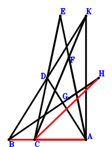
\(\because \) D is the midpoint of BK \(\therefore \small\overrightarrow{AD}=\dfrac{\small\overrightarrow{AB}}{2} + \dfrac{\small\overrightarrow{AK}}{2}\).\(\because \) D is the midpoint of CE \(\therefore \small\overrightarrow{AE}=- \small\overrightarrow{AC} + 2 \small\overrightarrow{AD}=\small\overrightarrow{AB} - \small\overrightarrow{AC} + \small\overrightarrow{AK}\).\(\because \) C, F, K are collinear and CF=2FK \(\therefore \small\overrightarrow{AF}=\dfrac{\small\overrightarrow{AC}}{3} + \dfrac{2 \small\overrightarrow{AK}}{3}\).\(\because \) G is the centroid of △KCA \(\therefore \small\overrightarrow{AG}=\dfrac{\small\overrightarrow{AC}}{3} + \dfrac{\small\overrightarrow{AK}}{3}\).\(\because \) B, G, H are collinear and BH=3GH \(\therefore \small\overrightarrow{AH}=- \dfrac{\small\overrightarrow{AB}}{2} + \dfrac{3 \small\overrightarrow{AG}}{2}=- \dfrac{\small\overrightarrow{AB}}{2} + \dfrac{\small\overrightarrow{AC}}{2} + \dfrac{\small\overrightarrow{AK}}{2}\).\(\because \) E, F, A are collinear and \(DA^{2}=\dfrac{EA \cdot FA}{2}\) \( \therefore- \small\overrightarrow{AD}^{2} + \dfrac{\small\overrightarrow{AE} \cdot \small\overrightarrow{AF}}{2}=- \left(\dfrac{\small\overrightarrow{AB}}{2} + \dfrac{\small\overrightarrow{AK}}{2}\right)^{2} + \dfrac{\left(\dfrac{\small\overrightarrow{AC}}{3} + \dfrac{2 \small\overrightarrow{AK}}{3}\right) \cdot \left(\small\overrightarrow{AB} - \small\overrightarrow{AC} + \small\overrightarrow{AK}\right)}{2}=- \dfrac{\small\overrightarrow{AB}^{2}}{4} + \dfrac{\small\overrightarrow{AB} \cdot \small\overrightarrow{AC}}{6} - \dfrac{\small\overrightarrow{AB} \cdot \small\overrightarrow{AK}}{6} - \dfrac{\small\overrightarrow{AC}^{2}}{6} - \dfrac{\small\overrightarrow{AC} \cdot \small\overrightarrow{AK}}{6} + \dfrac{\small\overrightarrow{AK}^{2}}{12}=0.\)In conclusion, \(\small\overrightarrow{BA}^{2} + \dfrac{3 \small\overrightarrow{CA}^{2}}{4} - \small\overrightarrow{HC}^{2}=\small\overrightarrow{AB}^{2} + \dfrac{3 \small\overrightarrow{AC}^{2}}{4} - \left(\small\overrightarrow{AC} - \small\overrightarrow{AH}\right)^{2}=\small\overrightarrow{AB}^{2} + \dfrac{3 \small\overrightarrow{AC}^{2}}{4} - \left(\dfrac{\small\overrightarrow{AB}}{2} + \dfrac{\small\overrightarrow{AC}}{2} - \dfrac{\small\overrightarrow{AK}}{2}\right)^{2}=\dfrac{3 \small\overrightarrow{AB}^{2}}{4} - \dfrac{\small\overrightarrow{AB} \cdot \small\overrightarrow{AC}}{2} + \dfrac{\small\overrightarrow{AB} \cdot \small\overrightarrow{AK}}{2} + \dfrac{\small\overrightarrow{AC}^{2}}{2} + \dfrac{\small\overrightarrow{AC} \cdot \small\overrightarrow{AK}}{2} - \dfrac{\small\overrightarrow{AK}^{2}}{4}=0\), that is, \(CH^{2}=BA^{2} + \dfrac{3 CA^{2}}{4}\).
Exercise 742： Let FBAK and KCAG be parallelograms. C, E, K are collinear and CE=2EK. A is the midpoint of BD. EA//FC and \(KD^{2}=2 EA \cdot FC\). Prove that \(\dfrac{BG^{2}}{4}=BA^{2} + \dfrac{3 CA^{2}}{4}\).
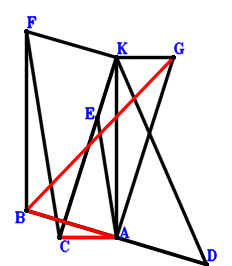
\(\because \) A is the midpoint of BD \(\therefore \small\overrightarrow{AD}=- \small\overrightarrow{AB}\).\(\because \) C, E, K are collinear and CE=2EK \(\therefore \small\overrightarrow{AE}=\dfrac{\small\overrightarrow{AC}}{3} + \dfrac{2 \small\overrightarrow{AK}}{3}\).\(\because \) FBAK is a parallelogram \(\therefore \small\overrightarrow{AF}=\small\overrightarrow{AB} + \small\overrightarrow{AK}\).\(\because \) KCAG is a parallelogram \(\therefore \small\overrightarrow{AG}=- \small\overrightarrow{AC} + \small\overrightarrow{AK}\).\(\because \) EA//FC and \(KD^{2}=2 EA \cdot FC\) \( \therefore\small\overrightarrow{EA} \cdot \small\overrightarrow{FC} - \dfrac{\small\overrightarrow{KD}^{2}}{2}=- \small\overrightarrow{AE} \cdot \left(\small\overrightarrow{AC} - \small\overrightarrow{AF}\right) - \dfrac{\left(\small\overrightarrow{AD} - \small\overrightarrow{AK}\right)^{2}}{2}=- \dfrac{\left(- \small\overrightarrow{AB} - \small\overrightarrow{AK}\right)^{2}}{2} - \left(\dfrac{\small\overrightarrow{AC}}{3} + \dfrac{2 \small\overrightarrow{AK}}{3}\right) \cdot \left(- \small\overrightarrow{AB} + \small\overrightarrow{AC} - \small\overrightarrow{AK}\right)=- \dfrac{\small\overrightarrow{AB}^{2}}{2} + \dfrac{\small\overrightarrow{AB} \cdot \small\overrightarrow{AC}}{3} - \dfrac{\small\overrightarrow{AB} \cdot \small\overrightarrow{AK}}{3} - \dfrac{\small\overrightarrow{AC}^{2}}{3} - \dfrac{\small\overrightarrow{AC} \cdot \small\overrightarrow{AK}}{3} + \dfrac{\small\overrightarrow{AK}^{2}}{6}=0.\)In conclusion, \(\small\overrightarrow{BA}^{2} + \dfrac{3 \small\overrightarrow{CA}^{2}}{4} - \dfrac{\small\overrightarrow{GB}^{2}}{4}=\small\overrightarrow{AB}^{2} + \dfrac{3 \small\overrightarrow{AC}^{2}}{4} - \dfrac{\left(\small\overrightarrow{AB} - \small\overrightarrow{AG}\right)^{2}}{4}=\small\overrightarrow{AB}^{2} + \dfrac{3 \small\overrightarrow{AC}^{2}}{4} - \dfrac{\left(\small\overrightarrow{AB} + \small\overrightarrow{AC} - \small\overrightarrow{AK}\right)^{2}}{4}=\dfrac{3 \small\overrightarrow{AB}^{2}}{4} - \dfrac{\small\overrightarrow{AB} \cdot \small\overrightarrow{AC}}{2} + \dfrac{\small\overrightarrow{AB} \cdot \small\overrightarrow{AK}}{2} + \dfrac{\small\overrightarrow{AC}^{2}}{2} + \dfrac{\small\overrightarrow{AC} \cdot \small\overrightarrow{AK}}{2} - \dfrac{\small\overrightarrow{AK}^{2}}{4}=0\), that is, \(\dfrac{BG^{2}}{4}=BA^{2} + \dfrac{3 CA^{2}}{4}\).
Exercise 1120： Let G be the centroid of △CKA. H, G, B are collinear and HB=3HG. C, F, K are collinear and CF=2FK. A is the midpoint of BI. D is the midpoint of KB and CE. F, A, E are collinear and \(CA^{2}=2 AE \cdot FA\). Prove that \(BA^{2}=CH^{2} + \dfrac{3 KI^{2}}{4}\).
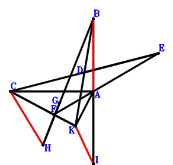
\(\because \) D is the midpoint of KB \(\therefore \small\overrightarrow{AD}=\dfrac{\small\overrightarrow{AB}}{2} + \dfrac{\small\overrightarrow{AK}}{2}\).\(\because \) D is the midpoint of CE \(\therefore \small\overrightarrow{AE}=- \small\overrightarrow{AC} + 2 \small\overrightarrow{AD}=\small\overrightarrow{AB} - \small\overrightarrow{AC} + \small\overrightarrow{AK}\).\(\because \) C, F, K are collinear and CF=2FK \(\therefore \small\overrightarrow{AF}=\dfrac{\small\overrightarrow{AC}}{3} + \dfrac{2 \small\overrightarrow{AK}}{3}\).\(\because \) G is the centroid of △CKA \(\therefore \small\overrightarrow{AG}=\dfrac{\small\overrightarrow{AC}}{3} + \dfrac{\small\overrightarrow{AK}}{3}\).\(\because \) H, G, B are collinear and HB=3HG \(\therefore \small\overrightarrow{AH}=- \dfrac{\small\overrightarrow{AB}}{2} + \dfrac{3 \small\overrightarrow{AG}}{2}=- \dfrac{\small\overrightarrow{AB}}{2} + \dfrac{\small\overrightarrow{AC}}{2} + \dfrac{\small\overrightarrow{AK}}{2}\).\(\because \) A is the midpoint of BI \(\therefore \small\overrightarrow{AI}=- \small\overrightarrow{AB}\).\(\because \) F, A, E are collinear and \(CA^{2}=2 AE \cdot FA\) \( \therefore\dfrac{\small\overrightarrow{AC}^{2}}{2} + \small\overrightarrow{AE} \cdot \small\overrightarrow{AF}=\dfrac{\small\overrightarrow{AC}^{2}}{2} + \left(\dfrac{\small\overrightarrow{AC}}{3} + \dfrac{2 \small\overrightarrow{AK}}{3}\right) \cdot \left(\small\overrightarrow{AB} - \small\overrightarrow{AC} + \small\overrightarrow{AK}\right)=\dfrac{\small\overrightarrow{AB} \cdot \small\overrightarrow{AC}}{3} + \dfrac{2 \small\overrightarrow{AB} \cdot \small\overrightarrow{AK}}{3} + \dfrac{\small\overrightarrow{AC}^{2}}{6} - \dfrac{\small\overrightarrow{AC} \cdot \small\overrightarrow{AK}}{3} + \dfrac{2 \small\overrightarrow{AK}^{2}}{3}=0.\)In conclusion, \(\small\overrightarrow{BA}^{2} - \small\overrightarrow{HC}^{2} - \dfrac{3 \small\overrightarrow{KI}^{2}}{4}=\small\overrightarrow{AB}^{2} - \left(\small\overrightarrow{AC} - \small\overrightarrow{AH}\right)^{2} - \dfrac{3 \left(\small\overrightarrow{AI} - \small\overrightarrow{AK}\right)^{2}}{4}=\small\overrightarrow{AB}^{2} - \dfrac{3 \left(- \small\overrightarrow{AB} - \small\overrightarrow{AK}\right)^{2}}{4} - \left(\dfrac{\small\overrightarrow{AB}}{2} + \dfrac{\small\overrightarrow{AC}}{2} - \dfrac{\small\overrightarrow{AK}}{2}\right)^{2}=- \dfrac{\small\overrightarrow{AB} \cdot \small\overrightarrow{AC}}{2} - \small\overrightarrow{AB} \cdot \small\overrightarrow{AK} - \dfrac{\small\overrightarrow{AC}^{2}}{4} + \dfrac{\small\overrightarrow{AC} \cdot \small\overrightarrow{AK}}{2} - \small\overrightarrow{AK}^{2}=0\), that is, \(BA^{2}=CH^{2} + \dfrac{3 KI^{2}}{4}\).
Exercise 1406： Let C, D, K be collinear and CD=2DK. F, H, E, G are the midpoints of CA, CB, BK, AK, respectively. DA//FE and \(CA^{2}=4 DA \cdot FE\). Prove that \(BA^{2}=3 EA^{2} + HG^{2}\).
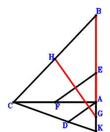
\(\because \) C, D, K are collinear and CD=2DK \(\therefore \small\overrightarrow{AD}=\dfrac{\small\overrightarrow{AC}}{3} + \dfrac{2 \small\overrightarrow{AK}}{3}\).\(\because \) E is the midpoint of BK \(\therefore \small\overrightarrow{AE}=\dfrac{\small\overrightarrow{AB}}{2} + \dfrac{\small\overrightarrow{AK}}{2}\).\(\because \) F is the midpoint of CA \(\therefore \small\overrightarrow{AF}=\dfrac{\small\overrightarrow{AC}}{2}\).\(\because \) G is the midpoint of AK \(\therefore \small\overrightarrow{AG}=\dfrac{\small\overrightarrow{AK}}{2}\).\(\because \) H is the midpoint of CB \(\therefore \small\overrightarrow{AH}=\dfrac{\small\overrightarrow{AB}}{2} + \dfrac{\small\overrightarrow{AC}}{2}\).\(\because \) DA//FE and \(CA^{2}=4 DA \cdot FE\) \( \therefore\dfrac{\small\overrightarrow{CA}^{2}}{4} - \small\overrightarrow{DA} \cdot \small\overrightarrow{FE}=\dfrac{\small\overrightarrow{AC}^{2}}{4} + \small\overrightarrow{AD} \cdot \left(\small\overrightarrow{AE} - \small\overrightarrow{AF}\right)=\dfrac{\small\overrightarrow{AC}^{2}}{4} + \left(\dfrac{\small\overrightarrow{AC}}{3} + \dfrac{2 \small\overrightarrow{AK}}{3}\right) \cdot \left(\dfrac{\small\overrightarrow{AB}}{2} - \dfrac{\small\overrightarrow{AC}}{2} + \dfrac{\small\overrightarrow{AK}}{2}\right)=\dfrac{\small\overrightarrow{AB} \cdot \small\overrightarrow{AC}}{6} + \dfrac{\small\overrightarrow{AB} \cdot \small\overrightarrow{AK}}{3} + \dfrac{\small\overrightarrow{AC}^{2}}{12} - \dfrac{\small\overrightarrow{AC} \cdot \small\overrightarrow{AK}}{6} + \dfrac{\small\overrightarrow{AK}^{2}}{3}=0.\)In conclusion, \(\small\overrightarrow{BA}^{2} - 3 \small\overrightarrow{EA}^{2} - \small\overrightarrow{GH}^{2}=\small\overrightarrow{AB}^{2} - 3 \small\overrightarrow{AE}^{2} - \left(- \small\overrightarrow{AG} + \small\overrightarrow{AH}\right)^{2}=\small\overrightarrow{AB}^{2} - 3 \left(\dfrac{\small\overrightarrow{AB}}{2} + \dfrac{\small\overrightarrow{AK}}{2}\right)^{2} - \left(\dfrac{\small\overrightarrow{AB}}{2} + \dfrac{\small\overrightarrow{AC}}{2} - \dfrac{\small\overrightarrow{AK}}{2}\right)^{2}=- \dfrac{\small\overrightarrow{AB} \cdot \small\overrightarrow{AC}}{2} - \small\overrightarrow{AB} \cdot \small\overrightarrow{AK} - \dfrac{\small\overrightarrow{AC}^{2}}{4} + \dfrac{\small\overrightarrow{AC} \cdot \small\overrightarrow{AK}}{2} - \small\overrightarrow{AK}^{2}=0\), that is, \(BA^{2}=3 EA^{2} + HG^{2}\).
Exercise 2334： Let HBAK and CDAK be parallelograms. F is the centroid of △CAK. C, E, K are collinear and CE=2EK. B, F, G are collinear and BG=3FG. BD//AE and \(BA^{2}=\dfrac{3 AE \cdot BD}{2}\). Prove that \(\dfrac{3 CA^{2}}{4}=CG^{2} + \dfrac{3 HA^{2}}{4}\).
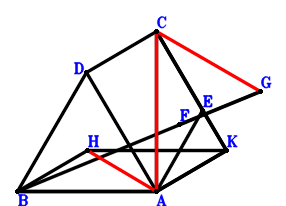
\(\because \) CDAK is a parallelogram \(\therefore \small\overrightarrow{AD}=\small\overrightarrow{AC} - \small\overrightarrow{AK}\).\(\because \) C, E, K are collinear and CE=2EK \(\therefore \small\overrightarrow{AE}=\dfrac{\small\overrightarrow{AC}}{3} + \dfrac{2 \small\overrightarrow{AK}}{3}\).\(\because \) F is the centroid of △CAK \(\therefore \small\overrightarrow{AF}=\dfrac{\small\overrightarrow{AC}}{3} + \dfrac{\small\overrightarrow{AK}}{3}\).\(\because \) B, F, G are collinear and BG=3FG \(\therefore \small\overrightarrow{AG}=- \dfrac{\small\overrightarrow{AB}}{2} + \dfrac{3 \small\overrightarrow{AF}}{2}=- \dfrac{\small\overrightarrow{AB}}{2} + \dfrac{\small\overrightarrow{AC}}{2} + \dfrac{\small\overrightarrow{AK}}{2}\).\(\because \) HBAK is a parallelogram \(\therefore \small\overrightarrow{AH}=\small\overrightarrow{AB} + \small\overrightarrow{AK}\).\(\because \) BD//AE and \(BA^{2}=\dfrac{3 AE \cdot BD}{2}\) \( \therefore\small\overrightarrow{BA}^{2} + \dfrac{3 \small\overrightarrow{BD} \cdot \small\overrightarrow{EA}}{2}=\small\overrightarrow{AB}^{2} - \dfrac{3 \small\overrightarrow{AE} \cdot \left(- \small\overrightarrow{AB} + \small\overrightarrow{AD}\right)}{2}=\small\overrightarrow{AB}^{2} - \dfrac{3 \left(\dfrac{\small\overrightarrow{AC}}{3} + \dfrac{2 \small\overrightarrow{AK}}{3}\right) \cdot \left(- \small\overrightarrow{AB} + \small\overrightarrow{AC} - \small\overrightarrow{AK}\right)}{2}=\small\overrightarrow{AB}^{2} + \dfrac{\small\overrightarrow{AB} \cdot \small\overrightarrow{AC}}{2} + \small\overrightarrow{AB} \cdot \small\overrightarrow{AK} - \dfrac{\small\overrightarrow{AC}^{2}}{2} - \dfrac{\small\overrightarrow{AC} \cdot \small\overrightarrow{AK}}{2} + \small\overrightarrow{AK}^{2}=0.\)In conclusion, \(\dfrac{3 \small\overrightarrow{CA}^{2}}{4} - \small\overrightarrow{GC}^{2} - \dfrac{3 \small\overrightarrow{HA}^{2}}{4}=\dfrac{3 \small\overrightarrow{AC}^{2}}{4} - \dfrac{3 \small\overrightarrow{AH}^{2}}{4} - \left(\small\overrightarrow{AC} - \small\overrightarrow{AG}\right)^{2}=\dfrac{3 \small\overrightarrow{AC}^{2}}{4} - \dfrac{3 \left(\small\overrightarrow{AB} + \small\overrightarrow{AK}\right)^{2}}{4} - \left(\dfrac{\small\overrightarrow{AB}}{2} + \dfrac{\small\overrightarrow{AC}}{2} - \dfrac{\small\overrightarrow{AK}}{2}\right)^{2}=- \small\overrightarrow{AB}^{2} - \dfrac{\small\overrightarrow{AB} \cdot \small\overrightarrow{AC}}{2} - \small\overrightarrow{AB} \cdot \small\overrightarrow{AK} + \dfrac{\small\overrightarrow{AC}^{2}}{2} + \dfrac{\small\overrightarrow{AC} \cdot \small\overrightarrow{AK}}{2} - \small\overrightarrow{AK}^{2}=0\), that is, \(\dfrac{3 CA^{2}}{4}=CG^{2} + \dfrac{3 HA^{2}}{4}\).
Exercise 2336： Let CDAK be a parallelogram. F is the centroid of △CAK. C, E, K are collinear and CE=2EK. B, F, G are collinear and BG=3FG. A is the midpoint of BH. BD//AE and \(BA^{2}=\dfrac{3 AE \cdot BD}{2}\). Prove that \(\dfrac{3 CA^{2}}{4}=CG^{2} + \dfrac{3 KH^{2}}{4}\).
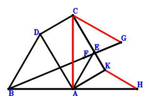
\(\because \) CDAK is a parallelogram \(\therefore \small\overrightarrow{AD}=\small\overrightarrow{AC} - \small\overrightarrow{AK}\).\(\because \) C, E, K are collinear and CE=2EK \(\therefore \small\overrightarrow{AE}=\dfrac{\small\overrightarrow{AC}}{3} + \dfrac{2 \small\overrightarrow{AK}}{3}\).\(\because \) F is the centroid of △CAK \(\therefore \small\overrightarrow{AF}=\dfrac{\small\overrightarrow{AC}}{3} + \dfrac{\small\overrightarrow{AK}}{3}\).\(\because \) B, F, G are collinear and BG=3FG \(\therefore \small\overrightarrow{AG}=- \dfrac{\small\overrightarrow{AB}}{2} + \dfrac{3 \small\overrightarrow{AF}}{2}=- \dfrac{\small\overrightarrow{AB}}{2} + \dfrac{\small\overrightarrow{AC}}{2} + \dfrac{\small\overrightarrow{AK}}{2}\).\(\because \) A is the midpoint of BH \(\therefore \small\overrightarrow{AH}=- \small\overrightarrow{AB}\).\(\because \) BD//AE and \(BA^{2}=\dfrac{3 AE \cdot BD}{2}\) \( \therefore\small\overrightarrow{BA}^{2} + \dfrac{3 \small\overrightarrow{BD} \cdot \small\overrightarrow{EA}}{2}=\small\overrightarrow{AB}^{2} - \dfrac{3 \small\overrightarrow{AE} \cdot \left(- \small\overrightarrow{AB} + \small\overrightarrow{AD}\right)}{2}=\small\overrightarrow{AB}^{2} - \dfrac{3 \left(\dfrac{\small\overrightarrow{AC}}{3} + \dfrac{2 \small\overrightarrow{AK}}{3}\right) \cdot \left(- \small\overrightarrow{AB} + \small\overrightarrow{AC} - \small\overrightarrow{AK}\right)}{2}=\small\overrightarrow{AB}^{2} + \dfrac{\small\overrightarrow{AB} \cdot \small\overrightarrow{AC}}{2} + \small\overrightarrow{AB} \cdot \small\overrightarrow{AK} - \dfrac{\small\overrightarrow{AC}^{2}}{2} - \dfrac{\small\overrightarrow{AC} \cdot \small\overrightarrow{AK}}{2} + \small\overrightarrow{AK}^{2}=0.\)In conclusion, \(\dfrac{3 \small\overrightarrow{CA}^{2}}{4} - \small\overrightarrow{GC}^{2} - \dfrac{3 \small\overrightarrow{KH}^{2}}{4}=\dfrac{3 \small\overrightarrow{AC}^{2}}{4} - \left(\small\overrightarrow{AC} - \small\overrightarrow{AG}\right)^{2} - \dfrac{3 \left(\small\overrightarrow{AH} - \small\overrightarrow{AK}\right)^{2}}{4}=\dfrac{3 \small\overrightarrow{AC}^{2}}{4} - \dfrac{3 \left(- \small\overrightarrow{AB} - \small\overrightarrow{AK}\right)^{2}}{4} - \left(\dfrac{\small\overrightarrow{AB}}{2} + \dfrac{\small\overrightarrow{AC}}{2} - \dfrac{\small\overrightarrow{AK}}{2}\right)^{2}=- \small\overrightarrow{AB}^{2} - \dfrac{\small\overrightarrow{AB} \cdot \small\overrightarrow{AC}}{2} - \small\overrightarrow{AB} \cdot \small\overrightarrow{AK} + \dfrac{\small\overrightarrow{AC}^{2}}{2} + \dfrac{\small\overrightarrow{AC} \cdot \small\overrightarrow{AK}}{2} - \small\overrightarrow{AK}^{2}=0\), that is, \(\dfrac{3 CA^{2}}{4}=CG^{2} + \dfrac{3 KH^{2}}{4}\).
Exercise 2686： Let G be the centroid of △CAK. C, D, K are collinear and CD=2DK. B, G, H are collinear and BH=3GH. F, E are the midpoints of CA, BK, respectively. AD//EF and \(BA^{2}=3 AD \cdot EF\). Prove that \(\dfrac{3 CA^{2}}{4}=CH^{2} + 3 EA^{2}\).
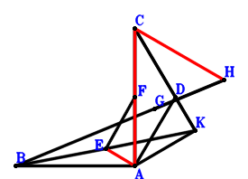
\(\because \) C, D, K are collinear and CD=2DK \(\therefore \small\overrightarrow{AD}=\dfrac{\small\overrightarrow{AC}}{3} + \dfrac{2 \small\overrightarrow{AK}}{3}\).\(\because \) E is the midpoint of BK \(\therefore \small\overrightarrow{AE}=\dfrac{\small\overrightarrow{AB}}{2} + \dfrac{\small\overrightarrow{AK}}{2}\).\(\because \) F is the midpoint of CA \(\therefore \small\overrightarrow{AF}=\dfrac{\small\overrightarrow{AC}}{2}\).\(\because \) G is the centroid of △CAK \(\therefore \small\overrightarrow{AG}=\dfrac{\small\overrightarrow{AC}}{3} + \dfrac{\small\overrightarrow{AK}}{3}\).\(\because \) B, G, H are collinear and BH=3GH \(\therefore \small\overrightarrow{AH}=- \dfrac{\small\overrightarrow{AB}}{2} + \dfrac{3 \small\overrightarrow{AG}}{2}=- \dfrac{\small\overrightarrow{AB}}{2} + \dfrac{\small\overrightarrow{AC}}{2} + \dfrac{\small\overrightarrow{AK}}{2}\).\(\because \) AD//EF and \(BA^{2}=3 AD \cdot EF\) \( \therefore\small\overrightarrow{BA}^{2} + 3 \small\overrightarrow{DA} \cdot \small\overrightarrow{EF}=\small\overrightarrow{AB}^{2} - 3 \small\overrightarrow{AD} \cdot \left(- \small\overrightarrow{AE} + \small\overrightarrow{AF}\right)=\small\overrightarrow{AB}^{2} - 3 \left(\dfrac{\small\overrightarrow{AC}}{3} + \dfrac{2 \small\overrightarrow{AK}}{3}\right) \cdot \left(- \dfrac{\small\overrightarrow{AB}}{2} + \dfrac{\small\overrightarrow{AC}}{2} - \dfrac{\small\overrightarrow{AK}}{2}\right)=\small\overrightarrow{AB}^{2} + \dfrac{\small\overrightarrow{AB} \cdot \small\overrightarrow{AC}}{2} + \small\overrightarrow{AB} \cdot \small\overrightarrow{AK} - \dfrac{\small\overrightarrow{AC}^{2}}{2} - \dfrac{\small\overrightarrow{AC} \cdot \small\overrightarrow{AK}}{2} + \small\overrightarrow{AK}^{2}=0.\)In conclusion, \(\dfrac{3 \small\overrightarrow{CA}^{2}}{4} - 3 \small\overrightarrow{EA}^{2} - \small\overrightarrow{HC}^{2}=\dfrac{3 \small\overrightarrow{AC}^{2}}{4} - 3 \small\overrightarrow{AE}^{2} - \left(\small\overrightarrow{AC} - \small\overrightarrow{AH}\right)^{2}=\dfrac{3 \small\overrightarrow{AC}^{2}}{4} - 3 \left(\dfrac{\small\overrightarrow{AB}}{2} + \dfrac{\small\overrightarrow{AK}}{2}\right)^{2} - \left(\dfrac{\small\overrightarrow{AB}}{2} + \dfrac{\small\overrightarrow{AC}}{2} - \dfrac{\small\overrightarrow{AK}}{2}\right)^{2}=- \small\overrightarrow{AB}^{2} - \dfrac{\small\overrightarrow{AB} \cdot \small\overrightarrow{AC}}{2} - \small\overrightarrow{AB} \cdot \small\overrightarrow{AK} + \dfrac{\small\overrightarrow{AC}^{2}}{2} + \dfrac{\small\overrightarrow{AC} \cdot \small\overrightarrow{AK}}{2} - \small\overrightarrow{AK}^{2}=0\), that is, \(\dfrac{3 CA^{2}}{4}=CH^{2} + 3 EA^{2}\).
Exercise 2788： Let GBAH be a trapezoid with BA//GH and BA=2GH. C, F, K are collinear and CF=2FK. G, A are the midpoints of CK, BI, respectively. D is the midpoint of EK and CA. BE//AF and \(BA^{2}=\dfrac{3 AF \cdot BE}{2}\). Prove that \(\dfrac{3 CA^{2}}{4}=CH^{2} + \dfrac{3 KI^{2}}{4}\).
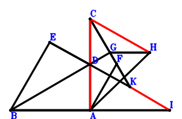
\(\because \) D is the midpoint of CA \(\therefore \small\overrightarrow{AD}=\dfrac{\small\overrightarrow{AC}}{2}\).\(\because \) D is the midpoint of EK \(\therefore \small\overrightarrow{AE}=2 \small\overrightarrow{AD} - \small\overrightarrow{AK}=\small\overrightarrow{AC} - \small\overrightarrow{AK}\).\(\because \) C, F, K are collinear and CF=2FK \(\therefore \small\overrightarrow{AF}=\dfrac{\small\overrightarrow{AC}}{3} + \dfrac{2 \small\overrightarrow{AK}}{3}\).\(\because \) G is the midpoint of CK \(\therefore \small\overrightarrow{AG}=\dfrac{\small\overrightarrow{AC}}{2} + \dfrac{\small\overrightarrow{AK}}{2}\).\(\because \) BA//GH and BA=2GH \(\therefore \small\overrightarrow{AH}=- \dfrac{\small\overrightarrow{AB}}{2} + \dfrac{\small\overrightarrow{AC}}{2} + \dfrac{\small\overrightarrow{AK}}{2}\).\(\because \) A is the midpoint of BI \(\therefore \small\overrightarrow{AI}=- \small\overrightarrow{AB}\).\(\because \) BE//AF and \(BA^{2}=\dfrac{3 AF \cdot BE}{2}\) \( \therefore\small\overrightarrow{BA}^{2} + \dfrac{3 \small\overrightarrow{BE} \cdot \small\overrightarrow{FA}}{2}=\small\overrightarrow{AB}^{2} - \dfrac{3 \small\overrightarrow{AF} \cdot \left(- \small\overrightarrow{AB} + \small\overrightarrow{AE}\right)}{2}=\small\overrightarrow{AB}^{2} - \dfrac{3 \left(\dfrac{\small\overrightarrow{AC}}{3} + \dfrac{2 \small\overrightarrow{AK}}{3}\right) \cdot \left(- \small\overrightarrow{AB} + \small\overrightarrow{AC} - \small\overrightarrow{AK}\right)}{2}=\small\overrightarrow{AB}^{2} + \dfrac{\small\overrightarrow{AB} \cdot \small\overrightarrow{AC}}{2} + \small\overrightarrow{AB} \cdot \small\overrightarrow{AK} - \dfrac{\small\overrightarrow{AC}^{2}}{2} - \dfrac{\small\overrightarrow{AC} \cdot \small\overrightarrow{AK}}{2} + \small\overrightarrow{AK}^{2}=0.\)In conclusion, \(\dfrac{3 \small\overrightarrow{CA}^{2}}{4} - \small\overrightarrow{HC}^{2} - \dfrac{3 \small\overrightarrow{KI}^{2}}{4}=\dfrac{3 \small\overrightarrow{AC}^{2}}{4} - \left(\small\overrightarrow{AC} - \small\overrightarrow{AH}\right)^{2} - \dfrac{3 \left(\small\overrightarrow{AI} - \small\overrightarrow{AK}\right)^{2}}{4}=\dfrac{3 \small\overrightarrow{AC}^{2}}{4} - \dfrac{3 \left(- \small\overrightarrow{AB} - \small\overrightarrow{AK}\right)^{2}}{4} - \left(\dfrac{\small\overrightarrow{AB}}{2} + \dfrac{\small\overrightarrow{AC}}{2} - \dfrac{\small\overrightarrow{AK}}{2}\right)^{2}=- \small\overrightarrow{AB}^{2} - \dfrac{\small\overrightarrow{AB} \cdot \small\overrightarrow{AC}}{2} - \small\overrightarrow{AB} \cdot \small\overrightarrow{AK} + \dfrac{\small\overrightarrow{AC}^{2}}{2} + \dfrac{\small\overrightarrow{AC} \cdot \small\overrightarrow{AK}}{2} - \small\overrightarrow{AK}^{2}=0\), that is, \(\dfrac{3 CA^{2}}{4}=CH^{2} + \dfrac{3 KI^{2}}{4}\).
Exercise 2819： Let EBAK be a parallelogram. CFGK is a trapezoid with KG//CF and KG=2CF. C, D, K are collinear and CD=2DK. F is the midpoint of CA. AD//EC and \(BA^{2}=\dfrac{3 AD \cdot EC}{2}\). Prove that \(\dfrac{3 CA^{2}}{4}=\dfrac{BG^{2}}{4} + \dfrac{3 EA^{2}}{4}\).
Exercise 2825： Let EBAK be a parallelogram. CAHG is a trapezoid with AH//CG and AH=2CG. C, D, K are collinear and CD=2DK. G is the midpoint of CK. F is the midpoint of BK and EA. AD//EC and \(BA^{2}=\dfrac{3 AD \cdot EC}{2}\). Prove that \(\dfrac{3 CA^{2}}{4}=\dfrac{BH^{2}}{4} + \dfrac{3 EA^{2}}{4}\).
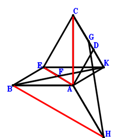
\(\because \) C, D, K are collinear and CD=2DK \(\therefore \small\overrightarrow{AD}=\dfrac{\small\overrightarrow{AC}}{3} + \dfrac{2 \small\overrightarrow{AK}}{3}\).\(\because \) EBAK is a parallelogram \(\therefore \small\overrightarrow{AE}=\small\overrightarrow{AB} + \small\overrightarrow{AK}\).\(\because \) F is the midpoint of BK \(\therefore \small\overrightarrow{AF}=\dfrac{\small\overrightarrow{AB}}{2} + \dfrac{\small\overrightarrow{AK}}{2}\).\(\because \) F is the midpoint of EA \(\therefore \small\overrightarrow{AG}=\dfrac{\small\overrightarrow{AC}}{2} + \dfrac{\small\overrightarrow{AK}}{2}\).\(\because \) G is the midpoint of CK \(\therefore \small\overrightarrow{AH}=- 2 \small\overrightarrow{AC} + 2 \small\overrightarrow{AG}=- \small\overrightarrow{AC} + \small\overrightarrow{AK}\).\(\because \) AH//CG and AH=2CG \( \therefore\small\overrightarrow{BA}^{2} + \dfrac{3 \small\overrightarrow{DA} \cdot \small\overrightarrow{EC}}{2}=\small\overrightarrow{AB}^{2} - \dfrac{3 \small\overrightarrow{AD} \cdot \left(\small\overrightarrow{AC} - \small\overrightarrow{AE}\right)}{2}=\small\overrightarrow{AB}^{2} - \dfrac{3 \left(\dfrac{\small\overrightarrow{AC}}{3} + \dfrac{2 \small\overrightarrow{AK}}{3}\right) \cdot \left(- \small\overrightarrow{AB} + \small\overrightarrow{AC} - \small\overrightarrow{AK}\right)}{2}=\small\overrightarrow{AB}^{2} + \dfrac{\small\overrightarrow{AB} \cdot \small\overrightarrow{AC}}{2} + \small\overrightarrow{AB} \cdot \small\overrightarrow{AK} - \dfrac{\small\overrightarrow{AC}^{2}}{2} - \dfrac{\small\overrightarrow{AC} \cdot \small\overrightarrow{AK}}{2} + \small\overrightarrow{AK}^{2}=0.\)In conclusion, \(3 \small\overrightarrow{CA}^{2} - 3 \small\overrightarrow{EA}^{2} - \small\overrightarrow{HB}^{2}=3 \small\overrightarrow{AC}^{2} - 3 \small\overrightarrow{AE}^{2} - \left(\small\overrightarrow{AB} - \small\overrightarrow{AH}\right)^{2}=3 \small\overrightarrow{AC}^{2} - 3 \left(\small\overrightarrow{AB} + \small\overrightarrow{AK}\right)^{2} - \left(\small\overrightarrow{AB} + \small\overrightarrow{AC} - \small\overrightarrow{AK}\right)^{2}=- 4 \small\overrightarrow{AB}^{2} - 2 \small\overrightarrow{AB} \cdot \small\overrightarrow{AC} - 4 \small\overrightarrow{AB} \cdot \small\overrightarrow{AK} + 2 \small\overrightarrow{AC}^{2} + 2 \small\overrightarrow{AC} \cdot \small\overrightarrow{AK} - 4 \small\overrightarrow{AK}^{2}=0\), that is, \(\dfrac{3 CA^{2}}{4}=\dfrac{BH^{2}}{4} + \dfrac{3 EA^{2}}{4}\).
Exercise 2841： Let EBAK and CBAF be parallelograms. C, D, K are collinear and CD=2DK. G is the midpoint of KF. AD//EC and \(BA^{2}=\dfrac{3 AD \cdot EC}{2}\). Prove that \(\dfrac{3 CA^{2}}{4}=CG^{2} + \dfrac{3 EA^{2}}{4}\).
Exercise 2856： Let EBAK be a parallelogram. F is the centroid of △CAK. B, F, G are collinear and BG=3FG. C, D, K are collinear and CD=2DK. AD//EC and \(BA^{2}=\dfrac{3 AD \cdot EC}{2}\). Prove that \(\dfrac{3 CA^{2}}{4}=CG^{2} + \dfrac{3 EA^{2}}{4}\).
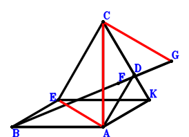
\(\because \) C, D, K are collinear and CD=2DK \(\therefore \small\overrightarrow{AD}=\dfrac{\small\overrightarrow{AC}}{3} + \dfrac{2 \small\overrightarrow{AK}}{3}\).\(\because \) EBAK is a parallelogram \(\therefore \small\overrightarrow{AE}=\small\overrightarrow{AB} + \small\overrightarrow{AK}\).\(\because \) F is the centroid of △CAK \(\therefore \small\overrightarrow{AF}=\dfrac{\small\overrightarrow{AC}}{3} + \dfrac{\small\overrightarrow{AK}}{3}\).\(\because \) B, F, G are collinear and BG=3FG \(\therefore \small\overrightarrow{AG}=- \dfrac{\small\overrightarrow{AB}}{2} + \dfrac{3 \small\overrightarrow{AF}}{2}=- \dfrac{\small\overrightarrow{AB}}{2} + \dfrac{\small\overrightarrow{AC}}{2} + \dfrac{\small\overrightarrow{AK}}{2}\).\(\because \) AD//EC and \(BA^{2}=\dfrac{3 AD \cdot EC}{2}\) \( \therefore\small\overrightarrow{BA}^{2} + \dfrac{3 \small\overrightarrow{DA} \cdot \small\overrightarrow{EC}}{2}=\small\overrightarrow{AB}^{2} - \dfrac{3 \small\overrightarrow{AD} \cdot \left(\small\overrightarrow{AC} - \small\overrightarrow{AE}\right)}{2}=\small\overrightarrow{AB}^{2} - \dfrac{3 \left(\dfrac{\small\overrightarrow{AC}}{3} + \dfrac{2 \small\overrightarrow{AK}}{3}\right) \cdot \left(- \small\overrightarrow{AB} + \small\overrightarrow{AC} - \small\overrightarrow{AK}\right)}{2}=\small\overrightarrow{AB}^{2} + \dfrac{\small\overrightarrow{AB} \cdot \small\overrightarrow{AC}}{2} + \small\overrightarrow{AB} \cdot \small\overrightarrow{AK} - \dfrac{\small\overrightarrow{AC}^{2}}{2} - \dfrac{\small\overrightarrow{AC} \cdot \small\overrightarrow{AK}}{2} + \small\overrightarrow{AK}^{2}=0.\)In conclusion, \(\dfrac{3 \small\overrightarrow{CA}^{2}}{4} - \dfrac{3 \small\overrightarrow{EA}^{2}}{4} - \small\overrightarrow{GC}^{2}=\dfrac{3 \small\overrightarrow{AC}^{2}}{4} - \dfrac{3 \small\overrightarrow{AE}^{2}}{4} - \left(\small\overrightarrow{AC} - \small\overrightarrow{AG}\right)^{2}=\dfrac{3 \small\overrightarrow{AC}^{2}}{4} - \dfrac{3 \left(\small\overrightarrow{AB} + \small\overrightarrow{AK}\right)^{2}}{4} - \left(\dfrac{\small\overrightarrow{AB}}{2} + \dfrac{\small\overrightarrow{AC}}{2} - \dfrac{\small\overrightarrow{AK}}{2}\right)^{2}=- \small\overrightarrow{AB}^{2} - \dfrac{\small\overrightarrow{AB} \cdot \small\overrightarrow{AC}}{2} - \small\overrightarrow{AB} \cdot \small\overrightarrow{AK} + \dfrac{\small\overrightarrow{AC}^{2}}{2} + \dfrac{\small\overrightarrow{AC} \cdot \small\overrightarrow{AK}}{2} - \small\overrightarrow{AK}^{2}=0\), that is, \(\dfrac{3 CA^{2}}{4}=CG^{2} + \dfrac{3 EA^{2}}{4}\).
Exercise 2858： Let EBAK be a parallelogram. F is the centroid of △CAK. B, F, G are collinear and BG=3FG. C, D, K are collinear and CD=2DK. A is the midpoint of BH. AD//EC and \(BA^{2}=\dfrac{3 AD \cdot EC}{2}\). Prove that \(\dfrac{3 CA^{2}}{4}=CG^{2} + \dfrac{3 KH^{2}}{4}\).
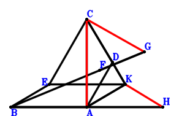
\(\because \) C, D, K are collinear and CD=2DK \(\therefore \small\overrightarrow{AD}=\dfrac{\small\overrightarrow{AC}}{3} + \dfrac{2 \small\overrightarrow{AK}}{3}\).\(\because \) EBAK is a parallelogram \(\therefore \small\overrightarrow{AE}=\small\overrightarrow{AB} + \small\overrightarrow{AK}\).\(\because \) F is the centroid of △CAK \(\therefore \small\overrightarrow{AF}=\dfrac{\small\overrightarrow{AC}}{3} + \dfrac{\small\overrightarrow{AK}}{3}\).\(\because \) B, F, G are collinear and BG=3FG \(\therefore \small\overrightarrow{AG}=- \dfrac{\small\overrightarrow{AB}}{2} + \dfrac{3 \small\overrightarrow{AF}}{2}=- \dfrac{\small\overrightarrow{AB}}{2} + \dfrac{\small\overrightarrow{AC}}{2} + \dfrac{\small\overrightarrow{AK}}{2}\).\(\because \) A is the midpoint of BH \(\therefore \small\overrightarrow{AH}=- \small\overrightarrow{AB}\).\(\because \) AD//EC and \(BA^{2}=\dfrac{3 AD \cdot EC}{2}\) \( \therefore\small\overrightarrow{BA}^{2} + \dfrac{3 \small\overrightarrow{DA} \cdot \small\overrightarrow{EC}}{2}=\small\overrightarrow{AB}^{2} - \dfrac{3 \small\overrightarrow{AD} \cdot \left(\small\overrightarrow{AC} - \small\overrightarrow{AE}\right)}{2}=\small\overrightarrow{AB}^{2} - \dfrac{3 \left(\dfrac{\small\overrightarrow{AC}}{3} + \dfrac{2 \small\overrightarrow{AK}}{3}\right) \cdot \left(- \small\overrightarrow{AB} + \small\overrightarrow{AC} - \small\overrightarrow{AK}\right)}{2}=\small\overrightarrow{AB}^{2} + \dfrac{\small\overrightarrow{AB} \cdot \small\overrightarrow{AC}}{2} + \small\overrightarrow{AB} \cdot \small\overrightarrow{AK} - \dfrac{\small\overrightarrow{AC}^{2}}{2} - \dfrac{\small\overrightarrow{AC} \cdot \small\overrightarrow{AK}}{2} + \small\overrightarrow{AK}^{2}=0.\)In conclusion, \(\dfrac{3 \small\overrightarrow{CA}^{2}}{4} - \small\overrightarrow{GC}^{2} - \dfrac{3 \small\overrightarrow{KH}^{2}}{4}=\dfrac{3 \small\overrightarrow{AC}^{2}}{4} - \left(\small\overrightarrow{AC} - \small\overrightarrow{AG}\right)^{2} - \dfrac{3 \left(\small\overrightarrow{AH} - \small\overrightarrow{AK}\right)^{2}}{4}=\dfrac{3 \small\overrightarrow{AC}^{2}}{4} - \dfrac{3 \left(- \small\overrightarrow{AB} - \small\overrightarrow{AK}\right)^{2}}{4} - \left(\dfrac{\small\overrightarrow{AB}}{2} + \dfrac{\small\overrightarrow{AC}}{2} - \dfrac{\small\overrightarrow{AK}}{2}\right)^{2}=- \small\overrightarrow{AB}^{2} - \dfrac{\small\overrightarrow{AB} \cdot \small\overrightarrow{AC}}{2} - \small\overrightarrow{AB} \cdot \small\overrightarrow{AK} + \dfrac{\small\overrightarrow{AC}^{2}}{2} + \dfrac{\small\overrightarrow{AC} \cdot \small\overrightarrow{AK}}{2} - \small\overrightarrow{AK}^{2}=0\), that is, \(\dfrac{3 CA^{2}}{4}=CG^{2} + \dfrac{3 KH^{2}}{4}\).
Exercise 2877： Let EBAK be a parallelogram. GBAC is a trapezoid with BA//GC and BA=2GC. C, D, K are collinear and CD=2DK. A, F are the midpoints of BH, CK, respectively. AD//EC and \(BA^{2}=\dfrac{3 AD \cdot EC}{2}\). Prove that \(\dfrac{3 CA^{2}}{4}=GF^{2} + \dfrac{3 KH^{2}}{4}\).
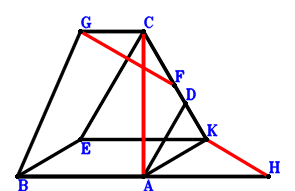
\(\because \) C, D, K are collinear and CD=2DK \(\therefore \small\overrightarrow{AD}=\dfrac{\small\overrightarrow{AC}}{3} + \dfrac{2 \small\overrightarrow{AK}}{3}\).\(\because \) EBAK is a parallelogram \(\therefore \small\overrightarrow{AE}=\small\overrightarrow{AB} + \small\overrightarrow{AK}\).\(\because \) F is the midpoint of CK \(\therefore \small\overrightarrow{AF}=\dfrac{\small\overrightarrow{AC}}{2} + \dfrac{\small\overrightarrow{AK}}{2}\).\(\because \) BA//GC and BA=2GC \(\therefore \small\overrightarrow{AG}=\dfrac{\small\overrightarrow{AB}}{2} + \small\overrightarrow{AC}\).\(\because \) A is the midpoint of BH \(\therefore \small\overrightarrow{AH}=- \small\overrightarrow{AB}\).\(\because \) AD//EC and \(BA^{2}=\dfrac{3 AD \cdot EC}{2}\) \( \therefore\small\overrightarrow{BA}^{2} + \dfrac{3 \small\overrightarrow{DA} \cdot \small\overrightarrow{EC}}{2}=\small\overrightarrow{AB}^{2} - \dfrac{3 \small\overrightarrow{AD} \cdot \left(\small\overrightarrow{AC} - \small\overrightarrow{AE}\right)}{2}=\small\overrightarrow{AB}^{2} - \dfrac{3 \left(\dfrac{\small\overrightarrow{AC}}{3} + \dfrac{2 \small\overrightarrow{AK}}{3}\right) \cdot \left(- \small\overrightarrow{AB} + \small\overrightarrow{AC} - \small\overrightarrow{AK}\right)}{2}=\small\overrightarrow{AB}^{2} + \dfrac{\small\overrightarrow{AB} \cdot \small\overrightarrow{AC}}{2} + \small\overrightarrow{AB} \cdot \small\overrightarrow{AK} - \dfrac{\small\overrightarrow{AC}^{2}}{2} - \dfrac{\small\overrightarrow{AC} \cdot \small\overrightarrow{AK}}{2} + \small\overrightarrow{AK}^{2}=0.\)In conclusion, \(\dfrac{3 \small\overrightarrow{CA}^{2}}{4} - \small\overrightarrow{FG}^{2} - \dfrac{3 \small\overrightarrow{KH}^{2}}{4}=\dfrac{3 \small\overrightarrow{AC}^{2}}{4} - \left(- \small\overrightarrow{AF} + \small\overrightarrow{AG}\right)^{2} - \dfrac{3 \left(\small\overrightarrow{AH} - \small\overrightarrow{AK}\right)^{2}}{4}=\dfrac{3 \small\overrightarrow{AC}^{2}}{4} - \dfrac{3 \left(- \small\overrightarrow{AB} - \small\overrightarrow{AK}\right)^{2}}{4} - \left(\dfrac{\small\overrightarrow{AB}}{2} + \dfrac{\small\overrightarrow{AC}}{2} - \dfrac{\small\overrightarrow{AK}}{2}\right)^{2}=- \small\overrightarrow{AB}^{2} - \dfrac{\small\overrightarrow{AB} \cdot \small\overrightarrow{AC}}{2} - \small\overrightarrow{AB} \cdot \small\overrightarrow{AK} + \dfrac{\small\overrightarrow{AC}^{2}}{2} + \dfrac{\small\overrightarrow{AC} \cdot \small\overrightarrow{AK}}{2} - \small\overrightarrow{AK}^{2}=0\), that is, \(\dfrac{3 CA^{2}}{4}=GF^{2} + \dfrac{3 KH^{2}}{4}\).
Exercise 2885： Let KCAE and KABD be parallelograms. C, F, K are collinear and CF=2FK. CA=AD and BE=2AB. Prove that FA⊥CD.
Exercise 2905： Let BAKD and ECAB be parallelograms. C, H, K are collinear and CH=2HK. F is the midpoint of CA and GB. EK=2AB and CA=AD. Prove that GK⊥HA.
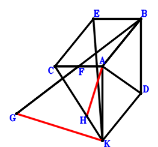
\(\because \) BAKD is a parallelogram \(\therefore \small\overrightarrow{AD}=\small\overrightarrow{AB} + \small\overrightarrow{AK}\).\(\because \) ECAB is a parallelogram \(\therefore \small\overrightarrow{AE}=\small\overrightarrow{AB} + \small\overrightarrow{AC}\).\(\because \) F is the midpoint of CA \(\therefore \small\overrightarrow{AF}=\dfrac{\small\overrightarrow{AC}}{2}\).\(\because \) F is the midpoint of GB \(\therefore \small\overrightarrow{AG}=- \small\overrightarrow{AB} + 2 \small\overrightarrow{AF}=- \small\overrightarrow{AB} + \small\overrightarrow{AC}\).\(\because \) C, H, K are collinear and CH=2HK \(\therefore \small\overrightarrow{AH}=\dfrac{\small\overrightarrow{AC}}{3} + \dfrac{2 \small\overrightarrow{AK}}{3}\).\(\because \) CA=AD \(\therefore \small\overrightarrow{AC}^{2} - \small\overrightarrow{AD}^{2}=\small\overrightarrow{AC}^{2} - \left(\small\overrightarrow{AB} + \small\overrightarrow{AK}\right)^{2}=- \small\overrightarrow{AB}^{2} - 2 \small\overrightarrow{AB} \cdot \small\overrightarrow{AK} + \small\overrightarrow{AC}^{2} - \small\overrightarrow{AK}^{2}=0\) . . . . . . \(①\)\(\because \) EK=2AB \(\therefore \small\overrightarrow{BA}^{2} - \dfrac{\small\overrightarrow{KE}^{2}}{4}=\small\overrightarrow{AB}^{2} - \dfrac{\left(\small\overrightarrow{AE} - \small\overrightarrow{AK}\right)^{2}}{4}=\small\overrightarrow{AB}^{2} - \dfrac{\left(\small\overrightarrow{AB} + \small\overrightarrow{AC} - \small\overrightarrow{AK}\right)^{2}}{4}=\dfrac{3 \small\overrightarrow{AB}^{2}}{4} - \dfrac{\small\overrightarrow{AB} \cdot \small\overrightarrow{AC}}{2} + \dfrac{\small\overrightarrow{AB} \cdot \small\overrightarrow{AK}}{2} - \dfrac{\small\overrightarrow{AC}^{2}}{4} + \dfrac{\small\overrightarrow{AC} \cdot \small\overrightarrow{AK}}{2} - \dfrac{\small\overrightarrow{AK}^{2}}{4}=0\) . . . . . . \(②\)In conclusion, \(\small\overrightarrow{HA} \cdot \small\overrightarrow{KG}=- \small\overrightarrow{AH} \cdot \left(\small\overrightarrow{AG} - \small\overrightarrow{AK}\right)=- \left(\dfrac{\small\overrightarrow{AC}}{3} + \dfrac{2 \small\overrightarrow{AK}}{3}\right) \cdot \left(- \small\overrightarrow{AB} + \small\overrightarrow{AC} - \small\overrightarrow{AK}\right)=\dfrac{\small\overrightarrow{AB} \cdot \small\overrightarrow{AC}}{3} + \dfrac{2 \small\overrightarrow{AB} \cdot \small\overrightarrow{AK}}{3} - \dfrac{\small\overrightarrow{AC}^{2}}{3} - \dfrac{\small\overrightarrow{AC} \cdot \small\overrightarrow{AK}}{3} + \dfrac{2 \small\overrightarrow{AK}^{2}}{3}=-1/2\cdot①-2/3\cdot②=0\), that is, GK⊥HA.
Exercise 2933： Let KABD be a parallelogram. FECA is a trapezoid with AF//CE and AF=2CE. C, G, K are collinear and CG=2GK. E, H, I are the midpoints of CK, KB, CA, respectively. BF=2AB and CA=AD. Prove that GA⊥IH.
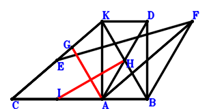
\(\because \) KABD is a parallelogram \(\therefore \small\overrightarrow{AD}=\small\overrightarrow{AB} + \small\overrightarrow{AK}\).\(\because \) E is the midpoint of CK \(\therefore \small\overrightarrow{AE}=\dfrac{\small\overrightarrow{AC}}{2} + \dfrac{\small\overrightarrow{AK}}{2}\).\(\because \) AF//CE and AF=2CE \(\therefore \small\overrightarrow{AF}=- 2 \small\overrightarrow{AC} + 2 \small\overrightarrow{AE}=- \small\overrightarrow{AC} + \small\overrightarrow{AK}\).\(\because \) C, G, K are collinear and CG=2GK \(\therefore \small\overrightarrow{AG}=\dfrac{\small\overrightarrow{AC}}{3} + \dfrac{2 \small\overrightarrow{AK}}{3}\).\(\because \) H is the midpoint of KB \(\therefore \small\overrightarrow{AH}=\dfrac{\small\overrightarrow{AB}}{2} + \dfrac{\small\overrightarrow{AK}}{2}\).\(\because \) I is the midpoint of CA \(\therefore \small\overrightarrow{AI}=\dfrac{\small\overrightarrow{AC}}{2}\).\(\because \) CA=AD \(\therefore \small\overrightarrow{AC}^{2} - \small\overrightarrow{AD}^{2}=\small\overrightarrow{AC}^{2} - \left(\small\overrightarrow{AB} + \small\overrightarrow{AK}\right)^{2}=- \small\overrightarrow{AB}^{2} - 2 \small\overrightarrow{AB} \cdot \small\overrightarrow{AK} + \small\overrightarrow{AC}^{2} - \small\overrightarrow{AK}^{2}=0\) . . . . . . \(①\)\(\because \) BF=2AB \(\therefore \small\overrightarrow{BA}^{2} - \dfrac{\small\overrightarrow{FB}^{2}}{4}=\small\overrightarrow{AB}^{2} - \dfrac{\left(\small\overrightarrow{AB} - \small\overrightarrow{AF}\right)^{2}}{4}=\small\overrightarrow{AB}^{2} - \dfrac{\left(\small\overrightarrow{AB} + \small\overrightarrow{AC} - \small\overrightarrow{AK}\right)^{2}}{4}=\dfrac{3 \small\overrightarrow{AB}^{2}}{4} - \dfrac{\small\overrightarrow{AB} \cdot \small\overrightarrow{AC}}{2} + \dfrac{\small\overrightarrow{AB} \cdot \small\overrightarrow{AK}}{2} - \dfrac{\small\overrightarrow{AC}^{2}}{4} + \dfrac{\small\overrightarrow{AC} \cdot \small\overrightarrow{AK}}{2} - \dfrac{\small\overrightarrow{AK}^{2}}{4}=0\) . . . . . . \(②\)In conclusion, \(\small\overrightarrow{GA} \cdot \small\overrightarrow{HI}=- \small\overrightarrow{AG} \cdot \left(- \small\overrightarrow{AH} + \small\overrightarrow{AI}\right)=- \left(\dfrac{\small\overrightarrow{AC}}{3} + \dfrac{2 \small\overrightarrow{AK}}{3}\right) \cdot \left(- \dfrac{\small\overrightarrow{AB}}{2} + \dfrac{\small\overrightarrow{AC}}{2} - \dfrac{\small\overrightarrow{AK}}{2}\right)=\dfrac{\small\overrightarrow{AB} \cdot \small\overrightarrow{AC}}{6} + \dfrac{\small\overrightarrow{AB} \cdot \small\overrightarrow{AK}}{3} - \dfrac{\small\overrightarrow{AC}^{2}}{6} - \dfrac{\small\overrightarrow{AC} \cdot \small\overrightarrow{AK}}{6} + \dfrac{\small\overrightarrow{AK}^{2}}{3}=-1/4\cdot①-1/3\cdot②=0\), that is, GA⊥IH.
Exercise 3011： Let BAKD and BCEA be parallelograms. C, G, K are collinear and CG=2GK. F is the midpoint of EK. AB=CF and CA=AD. Prove that GA⊥CD.
Exercise 3017： Let BAKD, BCEA and GCKA be parallelograms. C, H, K are collinear and CH=2HK. F is the midpoint of EK. AB=CF and CA=AD. Prove that GB⊥HA.
Exercise 3038： Let KABD be a parallelogram. E is the centroid of △KCA. C, G, K are collinear and CG=2GK. F, E, B are collinear and FB=3FE. AB=CF and CA=AD. Prove that GA⊥CD.
Exercise 3041： Let KABD be a parallelogram. E is the centroid of △KCA. C, G, K are collinear and CG=2GK. F, E, B are collinear and FB=3FE. H, I are the midpoints of KB, CA, respectively. AB=CF and CA=AD. Prove that GA⊥IH.
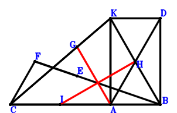
\(\because \) KABD is a parallelogram \(\therefore \small\overrightarrow{AD}=\small\overrightarrow{AB} + \small\overrightarrow{AK}\).\(\because \) E is the centroid of △KCA \(\therefore \small\overrightarrow{AE}=\dfrac{\small\overrightarrow{AC}}{3} + \dfrac{\small\overrightarrow{AK}}{3}\).\(\because \) F, E, B are collinear and FB=3FE \(\therefore \small\overrightarrow{AF}=- \dfrac{\small\overrightarrow{AB}}{2} + \dfrac{3 \small\overrightarrow{AE}}{2}=- \dfrac{\small\overrightarrow{AB}}{2} + \dfrac{\small\overrightarrow{AC}}{2} + \dfrac{\small\overrightarrow{AK}}{2}\).\(\because \) C, G, K are collinear and CG=2GK \(\therefore \small\overrightarrow{AG}=\dfrac{\small\overrightarrow{AC}}{3} + \dfrac{2 \small\overrightarrow{AK}}{3}\).\(\because \) H is the midpoint of KB \(\therefore \small\overrightarrow{AH}=\dfrac{\small\overrightarrow{AB}}{2} + \dfrac{\small\overrightarrow{AK}}{2}\).\(\because \) I is the midpoint of CA \(\therefore \small\overrightarrow{AI}=\dfrac{\small\overrightarrow{AC}}{2}\).\(\because \) CA=AD \(\therefore \small\overrightarrow{AC}^{2} - \small\overrightarrow{AD}^{2}=\small\overrightarrow{AC}^{2} - \left(\small\overrightarrow{AB} + \small\overrightarrow{AK}\right)^{2}=- \small\overrightarrow{AB}^{2} - 2 \small\overrightarrow{AB} \cdot \small\overrightarrow{AK} + \small\overrightarrow{AC}^{2} - \small\overrightarrow{AK}^{2}=0\) . . . . . . \(①\)\(\because \) AB=CF \(\therefore \small\overrightarrow{BA}^{2} - \small\overrightarrow{FC}^{2}=\small\overrightarrow{AB}^{2} - \left(\small\overrightarrow{AC} - \small\overrightarrow{AF}\right)^{2}=\small\overrightarrow{AB}^{2} - \left(\dfrac{\small\overrightarrow{AB}}{2} + \dfrac{\small\overrightarrow{AC}}{2} - \dfrac{\small\overrightarrow{AK}}{2}\right)^{2}=\dfrac{3 \small\overrightarrow{AB}^{2}}{4} - \dfrac{\small\overrightarrow{AB} \cdot \small\overrightarrow{AC}}{2} + \dfrac{\small\overrightarrow{AB} \cdot \small\overrightarrow{AK}}{2} - \dfrac{\small\overrightarrow{AC}^{2}}{4} + \dfrac{\small\overrightarrow{AC} \cdot \small\overrightarrow{AK}}{2} - \dfrac{\small\overrightarrow{AK}^{2}}{4}=0\) . . . . . . \(②\)In conclusion, \(\small\overrightarrow{GA} \cdot \small\overrightarrow{HI}=- \small\overrightarrow{AG} \cdot \left(- \small\overrightarrow{AH} + \small\overrightarrow{AI}\right)=- \left(\dfrac{\small\overrightarrow{AC}}{3} + \dfrac{2 \small\overrightarrow{AK}}{3}\right) \cdot \left(- \dfrac{\small\overrightarrow{AB}}{2} + \dfrac{\small\overrightarrow{AC}}{2} - \dfrac{\small\overrightarrow{AK}}{2}\right)=\dfrac{\small\overrightarrow{AB} \cdot \small\overrightarrow{AC}}{6} + \dfrac{\small\overrightarrow{AB} \cdot \small\overrightarrow{AK}}{3} - \dfrac{\small\overrightarrow{AC}^{2}}{6} - \dfrac{\small\overrightarrow{AC} \cdot \small\overrightarrow{AK}}{6} + \dfrac{\small\overrightarrow{AK}^{2}}{3}=-1/4\cdot①-1/3\cdot②=0\), that is, GA⊥IH.
Exercise 3044： Let KCGA and KABD be parallelograms. E is the centroid of △KCA. F, E, B are collinear and FB=3FE. C, H, K are collinear and CH=2HK. AB=CF and CA=AD. Prove that GB⊥HA.
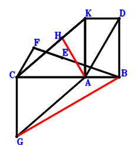
\(\because \) KABD is a parallelogram \(\therefore \small\overrightarrow{AD}=\small\overrightarrow{AB} + \small\overrightarrow{AK}\).\(\because \) E is the centroid of △KCA \(\therefore \small\overrightarrow{AE}=\dfrac{\small\overrightarrow{AC}}{3} + \dfrac{\small\overrightarrow{AK}}{3}\).\(\because \) F, E, B are collinear and FB=3FE \(\therefore \small\overrightarrow{AF}=- \dfrac{\small\overrightarrow{AB}}{2} + \dfrac{3 \small\overrightarrow{AE}}{2}=- \dfrac{\small\overrightarrow{AB}}{2} + \dfrac{\small\overrightarrow{AC}}{2} + \dfrac{\small\overrightarrow{AK}}{2}\).\(\because \) KCGA is a parallelogram \(\therefore \small\overrightarrow{AG}=\small\overrightarrow{AC} - \small\overrightarrow{AK}\).\(\because \) C, H, K are collinear and CH=2HK \(\therefore \small\overrightarrow{AH}=\dfrac{\small\overrightarrow{AC}}{3} + \dfrac{2 \small\overrightarrow{AK}}{3}\).\(\because \) CA=AD \(\therefore \small\overrightarrow{AC}^{2} - \small\overrightarrow{AD}^{2}=\small\overrightarrow{AC}^{2} - \left(\small\overrightarrow{AB} + \small\overrightarrow{AK}\right)^{2}=- \small\overrightarrow{AB}^{2} - 2 \small\overrightarrow{AB} \cdot \small\overrightarrow{AK} + \small\overrightarrow{AC}^{2} - \small\overrightarrow{AK}^{2}=0\) . . . . . . \(①\)\(\because \) AB=CF \(\therefore \small\overrightarrow{BA}^{2} - \small\overrightarrow{FC}^{2}=\small\overrightarrow{AB}^{2} - \left(\small\overrightarrow{AC} - \small\overrightarrow{AF}\right)^{2}=\small\overrightarrow{AB}^{2} - \left(\dfrac{\small\overrightarrow{AB}}{2} + \dfrac{\small\overrightarrow{AC}}{2} - \dfrac{\small\overrightarrow{AK}}{2}\right)^{2}=\dfrac{3 \small\overrightarrow{AB}^{2}}{4} - \dfrac{\small\overrightarrow{AB} \cdot \small\overrightarrow{AC}}{2} + \dfrac{\small\overrightarrow{AB} \cdot \small\overrightarrow{AK}}{2} - \dfrac{\small\overrightarrow{AC}^{2}}{4} + \dfrac{\small\overrightarrow{AC} \cdot \small\overrightarrow{AK}}{2} - \dfrac{\small\overrightarrow{AK}^{2}}{4}=0\) . . . . . . \(②\)In conclusion, \(\small\overrightarrow{BG} \cdot \small\overrightarrow{HA}=- \small\overrightarrow{AH} \cdot \left(- \small\overrightarrow{AB} + \small\overrightarrow{AG}\right)=- \left(\dfrac{\small\overrightarrow{AC}}{3} + \dfrac{2 \small\overrightarrow{AK}}{3}\right) \cdot \left(- \small\overrightarrow{AB} + \small\overrightarrow{AC} - \small\overrightarrow{AK}\right)=\dfrac{\small\overrightarrow{AB} \cdot \small\overrightarrow{AC}}{3} + \dfrac{2 \small\overrightarrow{AB} \cdot \small\overrightarrow{AK}}{3} - \dfrac{\small\overrightarrow{AC}^{2}}{3} - \dfrac{\small\overrightarrow{AC} \cdot \small\overrightarrow{AK}}{3} + \dfrac{2 \small\overrightarrow{AK}^{2}}{3}=-1/2\cdot①-2/3\cdot②=0\), that is, GB⊥HA.
Exercise 3047： Let KABD be a parallelogram. C, G, K are collinear and CG=2GK. F, E are the midpoints of CB, KA, respectively. AB=FE and CA=AD. Prove that GA⊥CD.
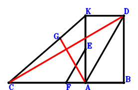
\(\because \) KABD is a parallelogram \(\therefore \small\overrightarrow{AD}=\small\overrightarrow{AB} + \small\overrightarrow{AK}\).\(\because \) E is the midpoint of KA \(\therefore \small\overrightarrow{AE}=\dfrac{\small\overrightarrow{AK}}{2}\).\(\because \) F is the midpoint of CB \(\therefore \small\overrightarrow{AF}=\dfrac{\small\overrightarrow{AB}}{2} + \dfrac{\small\overrightarrow{AC}}{2}\).\(\because \) C, G, K are collinear and CG=2GK \(\therefore \small\overrightarrow{AG}=\dfrac{\small\overrightarrow{AC}}{3} + \dfrac{2 \small\overrightarrow{AK}}{3}\).\(\because \) CA=AD \(\therefore \small\overrightarrow{AC}^{2} - \small\overrightarrow{AD}^{2}=\small\overrightarrow{AC}^{2} - \left(\small\overrightarrow{AB} + \small\overrightarrow{AK}\right)^{2}=- \small\overrightarrow{AB}^{2} - 2 \small\overrightarrow{AB} \cdot \small\overrightarrow{AK} + \small\overrightarrow{AC}^{2} - \small\overrightarrow{AK}^{2}=0\) . . . . . . \(①\)\(\because \) AB=FE \(\therefore \small\overrightarrow{BA}^{2} - \small\overrightarrow{EF}^{2}=\small\overrightarrow{AB}^{2} - \left(- \small\overrightarrow{AE} + \small\overrightarrow{AF}\right)^{2}=\small\overrightarrow{AB}^{2} - \left(\dfrac{\small\overrightarrow{AB}}{2} + \dfrac{\small\overrightarrow{AC}}{2} - \dfrac{\small\overrightarrow{AK}}{2}\right)^{2}=\dfrac{3 \small\overrightarrow{AB}^{2}}{4} - \dfrac{\small\overrightarrow{AB} \cdot \small\overrightarrow{AC}}{2} + \dfrac{\small\overrightarrow{AB} \cdot \small\overrightarrow{AK}}{2} - \dfrac{\small\overrightarrow{AC}^{2}}{4} + \dfrac{\small\overrightarrow{AC} \cdot \small\overrightarrow{AK}}{2} - \dfrac{\small\overrightarrow{AK}^{2}}{4}=0\) . . . . . . \(②\)In conclusion, \(\small\overrightarrow{DC} \cdot \small\overrightarrow{GA}=- \small\overrightarrow{AG} \cdot \left(\small\overrightarrow{AC} - \small\overrightarrow{AD}\right)=- \left(\dfrac{\small\overrightarrow{AC}}{3} + \dfrac{2 \small\overrightarrow{AK}}{3}\right) \cdot \left(- \small\overrightarrow{AB} + \small\overrightarrow{AC} - \small\overrightarrow{AK}\right)=\dfrac{\small\overrightarrow{AB} \cdot \small\overrightarrow{AC}}{3} + \dfrac{2 \small\overrightarrow{AB} \cdot \small\overrightarrow{AK}}{3} - \dfrac{\small\overrightarrow{AC}^{2}}{3} - \dfrac{\small\overrightarrow{AC} \cdot \small\overrightarrow{AK}}{3} + \dfrac{2 \small\overrightarrow{AK}^{2}}{3}=-1/2\cdot①-2/3\cdot②=0\), that is, GA⊥CD.
Exercise 3052： Let BAKD and BCGA be parallelograms. C, H, K are collinear and CH=2HK. F, E are the midpoints of CB, AK, respectively. AB=FE and CA=AD. Prove that GK⊥HA.
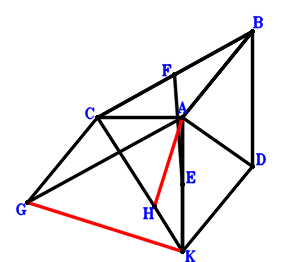
\(\because \) BAKD is a parallelogram \(\therefore \small\overrightarrow{AD}=\small\overrightarrow{AB} + \small\overrightarrow{AK}\).\(\because \) E is the midpoint of AK \(\therefore \small\overrightarrow{AE}=\dfrac{\small\overrightarrow{AK}}{2}\).\(\because \) F is the midpoint of CB \(\therefore \small\overrightarrow{AF}=\dfrac{\small\overrightarrow{AB}}{2} + \dfrac{\small\overrightarrow{AC}}{2}\).\(\because \) BCGA is a parallelogram \(\therefore \small\overrightarrow{AG}=- \small\overrightarrow{AB} + \small\overrightarrow{AC}\).\(\because \) C, H, K are collinear and CH=2HK \(\therefore \small\overrightarrow{AH}=\dfrac{\small\overrightarrow{AC}}{3} + \dfrac{2 \small\overrightarrow{AK}}{3}\).\(\because \) CA=AD \(\therefore \small\overrightarrow{AC}^{2} - \small\overrightarrow{AD}^{2}=\small\overrightarrow{AC}^{2} - \left(\small\overrightarrow{AB} + \small\overrightarrow{AK}\right)^{2}=- \small\overrightarrow{AB}^{2} - 2 \small\overrightarrow{AB} \cdot \small\overrightarrow{AK} + \small\overrightarrow{AC}^{2} - \small\overrightarrow{AK}^{2}=0\) . . . . . . \(①\)\(\because \) AB=FE \(\therefore \small\overrightarrow{BA}^{2} - \small\overrightarrow{EF}^{2}=\small\overrightarrow{AB}^{2} - \left(- \small\overrightarrow{AE} + \small\overrightarrow{AF}\right)^{2}=\small\overrightarrow{AB}^{2} - \left(\dfrac{\small\overrightarrow{AB}}{2} + \dfrac{\small\overrightarrow{AC}}{2} - \dfrac{\small\overrightarrow{AK}}{2}\right)^{2}=\dfrac{3 \small\overrightarrow{AB}^{2}}{4} - \dfrac{\small\overrightarrow{AB} \cdot \small\overrightarrow{AC}}{2} + \dfrac{\small\overrightarrow{AB} \cdot \small\overrightarrow{AK}}{2} - \dfrac{\small\overrightarrow{AC}^{2}}{4} + \dfrac{\small\overrightarrow{AC} \cdot \small\overrightarrow{AK}}{2} - \dfrac{\small\overrightarrow{AK}^{2}}{4}=0\) . . . . . . \(②\)In conclusion, \(\small\overrightarrow{HA} \cdot \small\overrightarrow{KG}=- \small\overrightarrow{AH} \cdot \left(\small\overrightarrow{AG} - \small\overrightarrow{AK}\right)=- \left(\dfrac{\small\overrightarrow{AC}}{3} + \dfrac{2 \small\overrightarrow{AK}}{3}\right) \cdot \left(- \small\overrightarrow{AB} + \small\overrightarrow{AC} - \small\overrightarrow{AK}\right)=\dfrac{\small\overrightarrow{AB} \cdot \small\overrightarrow{AC}}{3} + \dfrac{2 \small\overrightarrow{AB} \cdot \small\overrightarrow{AK}}{3} - \dfrac{\small\overrightarrow{AC}^{2}}{3} - \dfrac{\small\overrightarrow{AC} \cdot \small\overrightarrow{AK}}{3} + \dfrac{2 \small\overrightarrow{AK}^{2}}{3}=-1/2\cdot①-2/3\cdot②=0\), that is, GK⊥HA.
Exercise 3084： Let KCFB be a parallelogram. C, G, K are collinear and CG=2GK. D is the midpoint of KB and AE. FA=2AB and CA=AE. Prove that GA⊥CE.
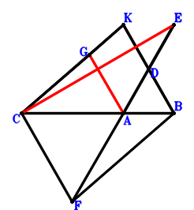
\(\because \) D is the midpoint of KB \(\therefore \small\overrightarrow{AD}=\dfrac{\small\overrightarrow{AB}}{2} + \dfrac{\small\overrightarrow{AK}}{2}\).\(\because \) D is the midpoint of AE \(\therefore \small\overrightarrow{AE}=2 \small\overrightarrow{AD}=\small\overrightarrow{AB} + \small\overrightarrow{AK}\).\(\because \) KCFB is a parallelogram \(\therefore \small\overrightarrow{AF}=\small\overrightarrow{AB} + \small\overrightarrow{AC} - \small\overrightarrow{AK}\).\(\because \) C, G, K are collinear and CG=2GK \(\therefore \small\overrightarrow{AG}=\dfrac{\small\overrightarrow{AC}}{3} + \dfrac{2 \small\overrightarrow{AK}}{3}\).\(\because \) CA=AE \(\therefore \small\overrightarrow{AC}^{2} - \small\overrightarrow{AE}^{2}=\small\overrightarrow{AC}^{2} - \left(\small\overrightarrow{AB} + \small\overrightarrow{AK}\right)^{2}=- \small\overrightarrow{AB}^{2} - 2 \small\overrightarrow{AB} \cdot \small\overrightarrow{AK} + \small\overrightarrow{AC}^{2} - \small\overrightarrow{AK}^{2}=0\) . . . . . . \(①\)\(\because \) FA=2AB \(\therefore \small\overrightarrow{AB}^{2} - \dfrac{\small\overrightarrow{AF}^{2}}{4}=\small\overrightarrow{AB}^{2} - \dfrac{\left(\small\overrightarrow{AB} + \small\overrightarrow{AC} - \small\overrightarrow{AK}\right)^{2}}{4}=\dfrac{3 \small\overrightarrow{AB}^{2}}{4} - \dfrac{\small\overrightarrow{AB} \cdot \small\overrightarrow{AC}}{2} + \dfrac{\small\overrightarrow{AB} \cdot \small\overrightarrow{AK}}{2} - \dfrac{\small\overrightarrow{AC}^{2}}{4} + \dfrac{\small\overrightarrow{AC} \cdot \small\overrightarrow{AK}}{2} - \dfrac{\small\overrightarrow{AK}^{2}}{4}=0\) . . . . . . \(②\)In conclusion, \(\small\overrightarrow{EC} \cdot \small\overrightarrow{GA}=- \small\overrightarrow{AG} \cdot \left(\small\overrightarrow{AC} - \small\overrightarrow{AE}\right)=- \left(\dfrac{\small\overrightarrow{AC}}{3} + \dfrac{2 \small\overrightarrow{AK}}{3}\right) \cdot \left(- \small\overrightarrow{AB} + \small\overrightarrow{AC} - \small\overrightarrow{AK}\right)=\dfrac{\small\overrightarrow{AB} \cdot \small\overrightarrow{AC}}{3} + \dfrac{2 \small\overrightarrow{AB} \cdot \small\overrightarrow{AK}}{3} - \dfrac{\small\overrightarrow{AC}^{2}}{3} - \dfrac{\small\overrightarrow{AC} \cdot \small\overrightarrow{AK}}{3} + \dfrac{2 \small\overrightarrow{AK}^{2}}{3}=-1/2\cdot①-2/3\cdot②=0\), that is, GA⊥CE.
Exercise 3101： Let KABE be a parallelogram. GFCA is a trapezoid with AG//CF and AG=2CF. C, H, K are collinear and CH=2HK. F is the midpoint of CK. D is the midpoint of KB and AE. BG=2AB and CA=AE. Prove that HA⊥CE.
\(\because \) D is the midpoint of KB \(\therefore \small\overrightarrow{AD}=\dfrac{\small\overrightarrow{AB}}{2} + \dfrac{\small\overrightarrow{AK}}{2}\).\(\because \) D is the midpoint of AE \(\therefore \small\overrightarrow{AE}=2 \small\overrightarrow{AD}=\small\overrightarrow{AB} + \small\overrightarrow{AK}\).\(\because \) F is the midpoint of CK \(\therefore \small\overrightarrow{AF}=\dfrac{\small\overrightarrow{AC}}{2} + \dfrac{\small\overrightarrow{AK}}{2}\).\(\because \) AG//CF and AG=2CF \(\therefore \small\overrightarrow{AG}=- 2 \small\overrightarrow{AC} + 2 \small\overrightarrow{AF}=- \small\overrightarrow{AC} + \small\overrightarrow{AK}\).\(\because \) C, H, K are collinear and CH=2HK \(\therefore \small\overrightarrow{AH}=\dfrac{\small\overrightarrow{AC}}{3} + \dfrac{2 \small\overrightarrow{AK}}{3}\).\(\because \) KABE is a parallelogram \(\therefore \small\overrightarrow{AC}^{2} - \small\overrightarrow{AE}^{2}=\small\overrightarrow{AC}^{2} - \left(\small\overrightarrow{AB} + \small\overrightarrow{AK}\right)^{2}=- \small\overrightarrow{AB}^{2} - 2 \small\overrightarrow{AB} \cdot \small\overrightarrow{AK} + \small\overrightarrow{AC}^{2} - \small\overrightarrow{AK}^{2}=0\) . . . . . . \(①\)\(\because \) CA=AE \(\therefore \small\overrightarrow{BA}^{2} - \dfrac{\small\overrightarrow{GB}^{2}}{4}=\small\overrightarrow{AB}^{2} - \dfrac{\left(\small\overrightarrow{AB} - \small\overrightarrow{AG}\right)^{2}}{4}=\small\overrightarrow{AB}^{2} - \dfrac{\left(\small\overrightarrow{AB} + \small\overrightarrow{AC} - \small\overrightarrow{AK}\right)^{2}}{4}=\dfrac{3 \small\overrightarrow{AB}^{2}}{4} - \dfrac{\small\overrightarrow{AB} \cdot \small\overrightarrow{AC}}{2} + \dfrac{\small\overrightarrow{AB} \cdot \small\overrightarrow{AK}}{2} - \dfrac{\small\overrightarrow{AC}^{2}}{4} + \dfrac{\small\overrightarrow{AC} \cdot \small\overrightarrow{AK}}{2} - \dfrac{\small\overrightarrow{AK}^{2}}{4}=0\) . . . . . . \(②\)In conclusion, \(\small\overrightarrow{EC} \cdot \small\overrightarrow{HA}=- \small\overrightarrow{AH} \cdot \left(\small\overrightarrow{AC} - \small\overrightarrow{AE}\right)=- \left(\dfrac{\small\overrightarrow{AC}}{3} + \dfrac{2 \small\overrightarrow{AK}}{3}\right) \cdot \left(- \small\overrightarrow{AB} + \small\overrightarrow{AC} - \small\overrightarrow{AK}\right)=\dfrac{\small\overrightarrow{AB} \cdot \small\overrightarrow{AC}}{3} + \dfrac{2 \small\overrightarrow{AB} \cdot \small\overrightarrow{AK}}{3} - \dfrac{\small\overrightarrow{AC}^{2}}{3} - \dfrac{\small\overrightarrow{AC} \cdot \small\overrightarrow{AK}}{3} + \dfrac{2 \small\overrightarrow{AK}^{2}}{3}=-1/2\cdot①-2/3\cdot②=0\), that is, HA⊥CE.
Exercise 3182： Let BCFA and BAKE be parallelograms. C, H, K are collinear and CH=2HK. G is the midpoint of FK. D is the midpoint of KB and AE. CA=AE and AB=CG. Prove that HA⊥CE.
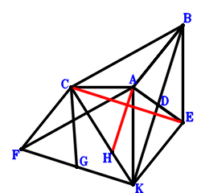
\(\because \) D is the midpoint of KB \(\therefore \small\overrightarrow{AD}=\dfrac{\small\overrightarrow{AB}}{2} + \dfrac{\small\overrightarrow{AK}}{2}\).\(\because \) D is the midpoint of AE \(\therefore \small\overrightarrow{AE}=2 \small\overrightarrow{AD}=\small\overrightarrow{AB} + \small\overrightarrow{AK}\).\(\because \) BCFA is a parallelogram \(\therefore \small\overrightarrow{AF}=- \small\overrightarrow{AB} + \small\overrightarrow{AC}\).\(\because \) G is the midpoint of FK \(\therefore \small\overrightarrow{AG}=\dfrac{\small\overrightarrow{AF}}{2} + \dfrac{\small\overrightarrow{AK}}{2}=- \dfrac{\small\overrightarrow{AB}}{2} + \dfrac{\small\overrightarrow{AC}}{2} + \dfrac{\small\overrightarrow{AK}}{2}\).\(\because \) C, H, K are collinear and CH=2HK \(\therefore \small\overrightarrow{AH}=\dfrac{\small\overrightarrow{AC}}{3} + \dfrac{2 \small\overrightarrow{AK}}{3}\).\(\because \) BAKE is a parallelogram \(\therefore \small\overrightarrow{AC}^{2} - \small\overrightarrow{AE}^{2}=\small\overrightarrow{AC}^{2} - \left(\small\overrightarrow{AB} + \small\overrightarrow{AK}\right)^{2}=- \small\overrightarrow{AB}^{2} - 2 \small\overrightarrow{AB} \cdot \small\overrightarrow{AK} + \small\overrightarrow{AC}^{2} - \small\overrightarrow{AK}^{2}=0\) . . . . . . \(①\)\(\because \) CA=AE \(\therefore \small\overrightarrow{BA}^{2} - \small\overrightarrow{GC}^{2}=\small\overrightarrow{AB}^{2} - \left(\small\overrightarrow{AC} - \small\overrightarrow{AG}\right)^{2}=\small\overrightarrow{AB}^{2} - \left(\dfrac{\small\overrightarrow{AB}}{2} + \dfrac{\small\overrightarrow{AC}}{2} - \dfrac{\small\overrightarrow{AK}}{2}\right)^{2}=\dfrac{3 \small\overrightarrow{AB}^{2}}{4} - \dfrac{\small\overrightarrow{AB} \cdot \small\overrightarrow{AC}}{2} + \dfrac{\small\overrightarrow{AB} \cdot \small\overrightarrow{AK}}{2} - \dfrac{\small\overrightarrow{AC}^{2}}{4} + \dfrac{\small\overrightarrow{AC} \cdot \small\overrightarrow{AK}}{2} - \dfrac{\small\overrightarrow{AK}^{2}}{4}=0\) . . . . . . \(②\)In conclusion, \(\small\overrightarrow{EC} \cdot \small\overrightarrow{HA}=- \small\overrightarrow{AH} \cdot \left(\small\overrightarrow{AC} - \small\overrightarrow{AE}\right)=- \left(\dfrac{\small\overrightarrow{AC}}{3} + \dfrac{2 \small\overrightarrow{AK}}{3}\right) \cdot \left(- \small\overrightarrow{AB} + \small\overrightarrow{AC} - \small\overrightarrow{AK}\right)=\dfrac{\small\overrightarrow{AB} \cdot \small\overrightarrow{AC}}{3} + \dfrac{2 \small\overrightarrow{AB} \cdot \small\overrightarrow{AK}}{3} - \dfrac{\small\overrightarrow{AC}^{2}}{3} - \dfrac{\small\overrightarrow{AC} \cdot \small\overrightarrow{AK}}{3} + \dfrac{2 \small\overrightarrow{AK}^{2}}{3}=-1/2\cdot①-2/3\cdot②=0\), that is, HA⊥CE.
Exercise 3218： Let KABE be a parallelogram. C, H, K are collinear and CH=2HK. G, F are the midpoints of CB, KA, respectively. D is the midpoint of KB and AE. AB=GF and CA=AE. Prove that HA⊥CE.
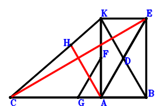
\(\because \) D is the midpoint of KB \(\therefore \small\overrightarrow{AD}=\dfrac{\small\overrightarrow{AB}}{2} + \dfrac{\small\overrightarrow{AK}}{2}\).\(\because \) D is the midpoint of AE \(\therefore \small\overrightarrow{AE}=2 \small\overrightarrow{AD}=\small\overrightarrow{AB} + \small\overrightarrow{AK}\).\(\because \) F is the midpoint of KA \(\therefore \small\overrightarrow{AF}=\dfrac{\small\overrightarrow{AK}}{2}\).\(\because \) G is the midpoint of CB \(\therefore \small\overrightarrow{AG}=\dfrac{\small\overrightarrow{AB}}{2} + \dfrac{\small\overrightarrow{AC}}{2}\).\(\because \) C, H, K are collinear and CH=2HK \(\therefore \small\overrightarrow{AH}=\dfrac{\small\overrightarrow{AC}}{3} + \dfrac{2 \small\overrightarrow{AK}}{3}\).\(\because \) KABE is a parallelogram \(\therefore \small\overrightarrow{AC}^{2} - \small\overrightarrow{AE}^{2}=\small\overrightarrow{AC}^{2} - \left(\small\overrightarrow{AB} + \small\overrightarrow{AK}\right)^{2}=- \small\overrightarrow{AB}^{2} - 2 \small\overrightarrow{AB} \cdot \small\overrightarrow{AK} + \small\overrightarrow{AC}^{2} - \small\overrightarrow{AK}^{2}=0\) . . . . . . \(①\)\(\because \) CA=AE \(\therefore \small\overrightarrow{BA}^{2} - \small\overrightarrow{FG}^{2}=\small\overrightarrow{AB}^{2} - \left(- \small\overrightarrow{AF} + \small\overrightarrow{AG}\right)^{2}=\small\overrightarrow{AB}^{2} - \left(\dfrac{\small\overrightarrow{AB}}{2} + \dfrac{\small\overrightarrow{AC}}{2} - \dfrac{\small\overrightarrow{AK}}{2}\right)^{2}=\dfrac{3 \small\overrightarrow{AB}^{2}}{4} - \dfrac{\small\overrightarrow{AB} \cdot \small\overrightarrow{AC}}{2} + \dfrac{\small\overrightarrow{AB} \cdot \small\overrightarrow{AK}}{2} - \dfrac{\small\overrightarrow{AC}^{2}}{4} + \dfrac{\small\overrightarrow{AC} \cdot \small\overrightarrow{AK}}{2} - \dfrac{\small\overrightarrow{AK}^{2}}{4}=0\) . . . . . . \(②\)In conclusion, \(\small\overrightarrow{EC} \cdot \small\overrightarrow{HA}=- \small\overrightarrow{AH} \cdot \left(\small\overrightarrow{AC} - \small\overrightarrow{AE}\right)=- \left(\dfrac{\small\overrightarrow{AC}}{3} + \dfrac{2 \small\overrightarrow{AK}}{3}\right) \cdot \left(- \small\overrightarrow{AB} + \small\overrightarrow{AC} - \small\overrightarrow{AK}\right)=\dfrac{\small\overrightarrow{AB} \cdot \small\overrightarrow{AC}}{3} + \dfrac{2 \small\overrightarrow{AB} \cdot \small\overrightarrow{AK}}{3} - \dfrac{\small\overrightarrow{AC}^{2}}{3} - \dfrac{\small\overrightarrow{AC} \cdot \small\overrightarrow{AK}}{3} + \dfrac{2 \small\overrightarrow{AK}^{2}}{3}=-1/2\cdot①-2/3\cdot②=0\), that is, HA⊥CE.
Exercise 3227： Let GKAB and KCAD be parallelograms. C, F, K are collinear and CF=2FK. A is the midpoint of BE. BD=2BA and CA=KE. Prove that FA⊥CG.
Exercise 3230： Let KCAD be a parallelogram. C, F, K are collinear and CF=2FK. A, G, H are the midpoints of BE, KB, CA, respectively. BD=2BA and CA=KE. Prove that FA⊥HG.
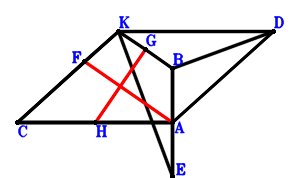
\(\because \) KCAD is a parallelogram \(\therefore \small\overrightarrow{AD}=- \small\overrightarrow{AC} + \small\overrightarrow{AK}\).\(\because \) A is the midpoint of BE \(\therefore \small\overrightarrow{AE}=- \small\overrightarrow{AB}\).\(\because \) C, F, K are collinear and CF=2FK \(\therefore \small\overrightarrow{AF}=\dfrac{\small\overrightarrow{AC}}{3} + \dfrac{2 \small\overrightarrow{AK}}{3}\).\(\because \) G is the midpoint of KB \(\therefore \small\overrightarrow{AG}=\dfrac{\small\overrightarrow{AB}}{2} + \dfrac{\small\overrightarrow{AK}}{2}\).\(\because \) H is the midpoint of CA \(\therefore \small\overrightarrow{AH}=\dfrac{\small\overrightarrow{AC}}{2}\).\(\because \) BD=2BA \(\therefore \small\overrightarrow{BA}^{2} - \dfrac{\small\overrightarrow{DB}^{2}}{4}=\small\overrightarrow{AB}^{2} - \dfrac{\left(\small\overrightarrow{AB} - \small\overrightarrow{AD}\right)^{2}}{4}=\small\overrightarrow{AB}^{2} - \dfrac{\left(\small\overrightarrow{AB} + \small\overrightarrow{AC} - \small\overrightarrow{AK}\right)^{2}}{4}=\dfrac{3 \small\overrightarrow{AB}^{2}}{4} - \dfrac{\small\overrightarrow{AB} \cdot \small\overrightarrow{AC}}{2} + \dfrac{\small\overrightarrow{AB} \cdot \small\overrightarrow{AK}}{2} - \dfrac{\small\overrightarrow{AC}^{2}}{4} + \dfrac{\small\overrightarrow{AC} \cdot \small\overrightarrow{AK}}{2} - \dfrac{\small\overrightarrow{AK}^{2}}{4}=0\) . . . . . . \(①\)\(\because \) CA=KE \(\therefore \small\overrightarrow{CA}^{2} - \small\overrightarrow{KE}^{2}=\small\overrightarrow{AC}^{2} - \left(\small\overrightarrow{AE} - \small\overrightarrow{AK}\right)^{2}=\small\overrightarrow{AC}^{2} - \left(- \small\overrightarrow{AB} - \small\overrightarrow{AK}\right)^{2}=- \small\overrightarrow{AB}^{2} - 2 \small\overrightarrow{AB} \cdot \small\overrightarrow{AK} + \small\overrightarrow{AC}^{2} - \small\overrightarrow{AK}^{2}=0\) . . . . . . \(②\)In conclusion, \(\small\overrightarrow{FA} \cdot \small\overrightarrow{GH}=- \small\overrightarrow{AF} \cdot \left(- \small\overrightarrow{AG} + \small\overrightarrow{AH}\right)=- \left(\dfrac{\small\overrightarrow{AC}}{3} + \dfrac{2 \small\overrightarrow{AK}}{3}\right) \cdot \left(- \dfrac{\small\overrightarrow{AB}}{2} + \dfrac{\small\overrightarrow{AC}}{2} - \dfrac{\small\overrightarrow{AK}}{2}\right)=\dfrac{\small\overrightarrow{AB} \cdot \small\overrightarrow{AC}}{6} + \dfrac{\small\overrightarrow{AB} \cdot \small\overrightarrow{AK}}{3} - \dfrac{\small\overrightarrow{AC}^{2}}{6} - \dfrac{\small\overrightarrow{AC} \cdot \small\overrightarrow{AK}}{6} + \dfrac{\small\overrightarrow{AK}^{2}}{3}=-1/3\cdot①-1/4\cdot②=0\), that is, FA⊥HG.
Exercise 3253： Let ECAB be a parallelogram. C, H, K are collinear and CH=2HK. A is the midpoint of DB. F is the midpoint of CG and KB. EK=2AB and CA=DK. Prove that HA⊥AG.
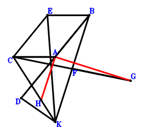
\(\because \) A is the midpoint of DB \(\therefore \small\overrightarrow{AD}=- \small\overrightarrow{AB}\).\(\because \) ECAB is a parallelogram \(\therefore \small\overrightarrow{AE}=\small\overrightarrow{AB} + \small\overrightarrow{AC}\).\(\because \) F is the midpoint of KB \(\therefore \small\overrightarrow{AF}=\dfrac{\small\overrightarrow{AB}}{2} + \dfrac{\small\overrightarrow{AK}}{2}\).\(\because \) F is the midpoint of CG \(\therefore \small\overrightarrow{AG}=- \small\overrightarrow{AC} + 2 \small\overrightarrow{AF}=\small\overrightarrow{AB} - \small\overrightarrow{AC} + \small\overrightarrow{AK}\).\(\because \) C, H, K are collinear and CH=2HK \(\therefore \small\overrightarrow{AH}=\dfrac{\small\overrightarrow{AC}}{3} + \dfrac{2 \small\overrightarrow{AK}}{3}\).\(\because \) CA=DK \(\therefore \small\overrightarrow{CA}^{2} - \small\overrightarrow{KD}^{2}=\small\overrightarrow{AC}^{2} - \left(\small\overrightarrow{AD} - \small\overrightarrow{AK}\right)^{2}=\small\overrightarrow{AC}^{2} - \left(- \small\overrightarrow{AB} - \small\overrightarrow{AK}\right)^{2}=- \small\overrightarrow{AB}^{2} - 2 \small\overrightarrow{AB} \cdot \small\overrightarrow{AK} + \small\overrightarrow{AC}^{2} - \small\overrightarrow{AK}^{2}=0\) . . . . . . \(①\)\(\because \) EK=2AB \(\therefore \small\overrightarrow{BA}^{2} - \dfrac{\small\overrightarrow{KE}^{2}}{4}=\small\overrightarrow{AB}^{2} - \dfrac{\left(\small\overrightarrow{AE} - \small\overrightarrow{AK}\right)^{2}}{4}=\small\overrightarrow{AB}^{2} - \dfrac{\left(\small\overrightarrow{AB} + \small\overrightarrow{AC} - \small\overrightarrow{AK}\right)^{2}}{4}=\dfrac{3 \small\overrightarrow{AB}^{2}}{4} - \dfrac{\small\overrightarrow{AB} \cdot \small\overrightarrow{AC}}{2} + \dfrac{\small\overrightarrow{AB} \cdot \small\overrightarrow{AK}}{2} - \dfrac{\small\overrightarrow{AC}^{2}}{4} + \dfrac{\small\overrightarrow{AC} \cdot \small\overrightarrow{AK}}{2} - \dfrac{\small\overrightarrow{AK}^{2}}{4}=0\) . . . . . . \(②\)In conclusion, \(\small\overrightarrow{AG} \cdot \small\overrightarrow{AH}=\left(\dfrac{\small\overrightarrow{AC}}{3} + \dfrac{2 \small\overrightarrow{AK}}{3}\right) \cdot \left(\small\overrightarrow{AB} - \small\overrightarrow{AC} + \small\overrightarrow{AK}\right)=\dfrac{\small\overrightarrow{AB} \cdot \small\overrightarrow{AC}}{3} + \dfrac{2 \small\overrightarrow{AB} \cdot \small\overrightarrow{AK}}{3} - \dfrac{\small\overrightarrow{AC}^{2}}{3} - \dfrac{\small\overrightarrow{AC} \cdot \small\overrightarrow{AK}}{3} + \dfrac{2 \small\overrightarrow{AK}^{2}}{3}=-1/2\cdot①-2/3\cdot②=0\), that is, HA⊥AG.
Exercise 3261： Let CKFB and CKBD be parallelograms. K, G, C are collinear and GC=2KG. A is the midpoint of BE. CA=KE and AD=2BA. Prove that FA⊥AG.
Exercise 3281： Let KABH be a parallelogram. FCBE is a trapezoid with CB//FE and CB=2FE. C, G, K are collinear and CG=2GK. A, E are the midpoints of DB, KA, respectively. AB=CF and CA=DK. Prove that GA⊥CH.
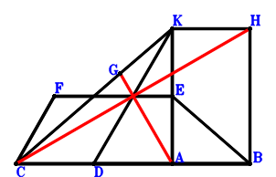
\(\because \) A is the midpoint of DB \(\therefore \small\overrightarrow{AD}=- \small\overrightarrow{AB}\).\(\because \) E is the midpoint of KA \(\therefore \small\overrightarrow{AE}=\dfrac{\small\overrightarrow{AK}}{2}\).\(\because \) CB//FE and CB=2FE \(\therefore \small\overrightarrow{AF}=- \dfrac{\small\overrightarrow{AB}}{2} + \dfrac{\small\overrightarrow{AC}}{2} + \dfrac{\small\overrightarrow{AK}}{2}\).\(\because \) C, G, K are collinear and CG=2GK \(\therefore \small\overrightarrow{AG}=\dfrac{\small\overrightarrow{AC}}{3} + \dfrac{2 \small\overrightarrow{AK}}{3}\).\(\because \) KABH is a parallelogram \(\therefore \small\overrightarrow{AH}=\small\overrightarrow{AB} + \small\overrightarrow{AK}\).\(\because \) CA=DK \(\therefore \small\overrightarrow{CA}^{2} - \small\overrightarrow{KD}^{2}=\small\overrightarrow{AC}^{2} - \left(\small\overrightarrow{AD} - \small\overrightarrow{AK}\right)^{2}=\small\overrightarrow{AC}^{2} - \left(- \small\overrightarrow{AB} - \small\overrightarrow{AK}\right)^{2}=- \small\overrightarrow{AB}^{2} - 2 \small\overrightarrow{AB} \cdot \small\overrightarrow{AK} + \small\overrightarrow{AC}^{2} - \small\overrightarrow{AK}^{2}=0\) . . . . . . \(①\)\(\because \) AB=CF \(\therefore \small\overrightarrow{BA}^{2} - \small\overrightarrow{FC}^{2}=\small\overrightarrow{AB}^{2} - \left(\small\overrightarrow{AC} - \small\overrightarrow{AF}\right)^{2}=\small\overrightarrow{AB}^{2} - \left(\dfrac{\small\overrightarrow{AB}}{2} + \dfrac{\small\overrightarrow{AC}}{2} - \dfrac{\small\overrightarrow{AK}}{2}\right)^{2}=\dfrac{3 \small\overrightarrow{AB}^{2}}{4} - \dfrac{\small\overrightarrow{AB} \cdot \small\overrightarrow{AC}}{2} + \dfrac{\small\overrightarrow{AB} \cdot \small\overrightarrow{AK}}{2} - \dfrac{\small\overrightarrow{AC}^{2}}{4} + \dfrac{\small\overrightarrow{AC} \cdot \small\overrightarrow{AK}}{2} - \dfrac{\small\overrightarrow{AK}^{2}}{4}=0\) . . . . . . \(②\)In conclusion, \(\small\overrightarrow{GA} \cdot \small\overrightarrow{HC}=- \small\overrightarrow{AG} \cdot \left(\small\overrightarrow{AC} - \small\overrightarrow{AH}\right)=- \left(\dfrac{\small\overrightarrow{AC}}{3} + \dfrac{2 \small\overrightarrow{AK}}{3}\right) \cdot \left(- \small\overrightarrow{AB} + \small\overrightarrow{AC} - \small\overrightarrow{AK}\right)=\dfrac{\small\overrightarrow{AB} \cdot \small\overrightarrow{AC}}{3} + \dfrac{2 \small\overrightarrow{AB} \cdot \small\overrightarrow{AK}}{3} - \dfrac{\small\overrightarrow{AC}^{2}}{3} - \dfrac{\small\overrightarrow{AC} \cdot \small\overrightarrow{AK}}{3} + \dfrac{2 \small\overrightarrow{AK}^{2}}{3}=-1/2\cdot①-2/3\cdot②=0\), that is, GA⊥CH.
Exercise 3380： Let KABH be a parallelogram. E is the centroid of △KCA. C, G, K are collinear and CG=2GK. F, E, B are collinear and FB=3FE. A is the midpoint of DB. AB=CF and CA=DK. Prove that GA⊥CH.
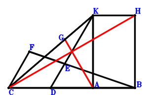
\(\because \) A is the midpoint of DB \(\therefore \small\overrightarrow{AD}=- \small\overrightarrow{AB}\).\(\because \) E is the centroid of △KCA \(\therefore \small\overrightarrow{AE}=\dfrac{\small\overrightarrow{AC}}{3} + \dfrac{\small\overrightarrow{AK}}{3}\).\(\because \) F, E, B are collinear and FB=3FE \(\therefore \small\overrightarrow{AF}=- \dfrac{\small\overrightarrow{AB}}{2} + \dfrac{3 \small\overrightarrow{AE}}{2}=- \dfrac{\small\overrightarrow{AB}}{2} + \dfrac{\small\overrightarrow{AC}}{2} + \dfrac{\small\overrightarrow{AK}}{2}\).\(\because \) C, G, K are collinear and CG=2GK \(\therefore \small\overrightarrow{AG}=\dfrac{\small\overrightarrow{AC}}{3} + \dfrac{2 \small\overrightarrow{AK}}{3}\).\(\because \) KABH is a parallelogram \(\therefore \small\overrightarrow{AH}=\small\overrightarrow{AB} + \small\overrightarrow{AK}\).\(\because \) CA=DK \(\therefore \small\overrightarrow{CA}^{2} - \small\overrightarrow{KD}^{2}=\small\overrightarrow{AC}^{2} - \left(\small\overrightarrow{AD} - \small\overrightarrow{AK}\right)^{2}=\small\overrightarrow{AC}^{2} - \left(- \small\overrightarrow{AB} - \small\overrightarrow{AK}\right)^{2}=- \small\overrightarrow{AB}^{2} - 2 \small\overrightarrow{AB} \cdot \small\overrightarrow{AK} + \small\overrightarrow{AC}^{2} - \small\overrightarrow{AK}^{2}=0\) . . . . . . \(①\)\(\because \) AB=CF \(\therefore \small\overrightarrow{BA}^{2} - \small\overrightarrow{FC}^{2}=\small\overrightarrow{AB}^{2} - \left(\small\overrightarrow{AC} - \small\overrightarrow{AF}\right)^{2}=\small\overrightarrow{AB}^{2} - \left(\dfrac{\small\overrightarrow{AB}}{2} + \dfrac{\small\overrightarrow{AC}}{2} - \dfrac{\small\overrightarrow{AK}}{2}\right)^{2}=\dfrac{3 \small\overrightarrow{AB}^{2}}{4} - \dfrac{\small\overrightarrow{AB} \cdot \small\overrightarrow{AC}}{2} + \dfrac{\small\overrightarrow{AB} \cdot \small\overrightarrow{AK}}{2} - \dfrac{\small\overrightarrow{AC}^{2}}{4} + \dfrac{\small\overrightarrow{AC} \cdot \small\overrightarrow{AK}}{2} - \dfrac{\small\overrightarrow{AK}^{2}}{4}=0\) . . . . . . \(②\)In conclusion, \(\small\overrightarrow{GA} \cdot \small\overrightarrow{HC}=- \small\overrightarrow{AG} \cdot \left(\small\overrightarrow{AC} - \small\overrightarrow{AH}\right)=- \left(\dfrac{\small\overrightarrow{AC}}{3} + \dfrac{2 \small\overrightarrow{AK}}{3}\right) \cdot \left(- \small\overrightarrow{AB} + \small\overrightarrow{AC} - \small\overrightarrow{AK}\right)=\dfrac{\small\overrightarrow{AB} \cdot \small\overrightarrow{AC}}{3} + \dfrac{2 \small\overrightarrow{AB} \cdot \small\overrightarrow{AK}}{3} - \dfrac{\small\overrightarrow{AC}^{2}}{3} - \dfrac{\small\overrightarrow{AC} \cdot \small\overrightarrow{AK}}{3} + \dfrac{2 \small\overrightarrow{AK}^{2}}{3}=-1/2\cdot①-2/3\cdot②=0\), that is, GA⊥CH.
Exercise 3381： Let E be the centroid of △KCA. C, G, K are collinear and CG=2GK. F, E, B are collinear and FB=3FE. A is the midpoint of DB. H is the midpoint of AI and KB. AB=CF and CA=DK. Prove that GA⊥CI.
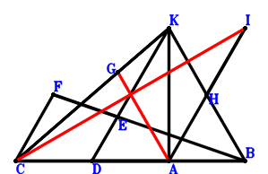
\(\because \) A is the midpoint of DB \(\therefore \small\overrightarrow{AD}=- \small\overrightarrow{AB}\).\(\because \) E is the centroid of △KCA \(\therefore \small\overrightarrow{AE}=\dfrac{\small\overrightarrow{AC}}{3} + \dfrac{\small\overrightarrow{AK}}{3}\).\(\because \) F, E, B are collinear and FB=3FE \(\therefore \small\overrightarrow{AF}=- \dfrac{\small\overrightarrow{AB}}{2} + \dfrac{3 \small\overrightarrow{AE}}{2}=- \dfrac{\small\overrightarrow{AB}}{2} + \dfrac{\small\overrightarrow{AC}}{2} + \dfrac{\small\overrightarrow{AK}}{2}\).\(\because \) C, G, K are collinear and CG=2GK \(\therefore \small\overrightarrow{AG}=\dfrac{\small\overrightarrow{AC}}{3} + \dfrac{2 \small\overrightarrow{AK}}{3}\).\(\because \) H is the midpoint of KB \(\therefore \small\overrightarrow{AH}=\dfrac{\small\overrightarrow{AB}}{2} + \dfrac{\small\overrightarrow{AK}}{2}\).\(\because \) H is the midpoint of AI \(\therefore \small\overrightarrow{AI}=2 \small\overrightarrow{AH}=\small\overrightarrow{AB} + \small\overrightarrow{AK}\).\(\because \) CA=DK \(\therefore \small\overrightarrow{CA}^{2} - \small\overrightarrow{KD}^{2}=\small\overrightarrow{AC}^{2} - \left(\small\overrightarrow{AD} - \small\overrightarrow{AK}\right)^{2}=\small\overrightarrow{AC}^{2} - \left(- \small\overrightarrow{AB} - \small\overrightarrow{AK}\right)^{2}=- \small\overrightarrow{AB}^{2} - 2 \small\overrightarrow{AB} \cdot \small\overrightarrow{AK} + \small\overrightarrow{AC}^{2} - \small\overrightarrow{AK}^{2}=0\) . . . . . . \(①\)\(\because \) AB=CF \(\therefore \small\overrightarrow{BA}^{2} - \small\overrightarrow{FC}^{2}=\small\overrightarrow{AB}^{2} - \left(\small\overrightarrow{AC} - \small\overrightarrow{AF}\right)^{2}=\small\overrightarrow{AB}^{2} - \left(\dfrac{\small\overrightarrow{AB}}{2} + \dfrac{\small\overrightarrow{AC}}{2} - \dfrac{\small\overrightarrow{AK}}{2}\right)^{2}=\dfrac{3 \small\overrightarrow{AB}^{2}}{4} - \dfrac{\small\overrightarrow{AB} \cdot \small\overrightarrow{AC}}{2} + \dfrac{\small\overrightarrow{AB} \cdot \small\overrightarrow{AK}}{2} - \dfrac{\small\overrightarrow{AC}^{2}}{4} + \dfrac{\small\overrightarrow{AC} \cdot \small\overrightarrow{AK}}{2} - \dfrac{\small\overrightarrow{AK}^{2}}{4}=0\) . . . . . . \(②\)In conclusion, \(\small\overrightarrow{GA} \cdot \small\overrightarrow{IC}=- \small\overrightarrow{AG} \cdot \left(\small\overrightarrow{AC} - \small\overrightarrow{AI}\right)=- \left(\dfrac{\small\overrightarrow{AC}}{3} + \dfrac{2 \small\overrightarrow{AK}}{3}\right) \cdot \left(- \small\overrightarrow{AB} + \small\overrightarrow{AC} - \small\overrightarrow{AK}\right)=\dfrac{\small\overrightarrow{AB} \cdot \small\overrightarrow{AC}}{3} + \dfrac{2 \small\overrightarrow{AB} \cdot \small\overrightarrow{AK}}{3} - \dfrac{\small\overrightarrow{AC}^{2}}{3} - \dfrac{\small\overrightarrow{AC} \cdot \small\overrightarrow{AK}}{3} + \dfrac{2 \small\overrightarrow{AK}^{2}}{3}=-1/2\cdot①-2/3\cdot②=0\), that is, GA⊥CI.
Exercise 3412： Let BAEK and BCFA be parallelograms. C, G, K are collinear and CG=2GK. D is the midpoint of KB. CA=2AD and CE=2AB. Prove that FK⊥GA.
Exercise 3446： Let FECA be a trapezoid with AF//CE and AF=2CE. C, G, K are collinear and CG=2GK. E, D, H are the midpoints of CK, KB, CA, respectively. CA=2AD and BF=2AB. Prove that GA⊥HD.
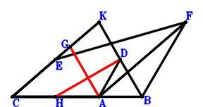
\(\because \) D is the midpoint of KB \(\therefore \small\overrightarrow{AD}=\dfrac{\small\overrightarrow{AB}}{2} + \dfrac{\small\overrightarrow{AK}}{2}\).\(\because \) E is the midpoint of CK \(\therefore \small\overrightarrow{AE}=\dfrac{\small\overrightarrow{AC}}{2} + \dfrac{\small\overrightarrow{AK}}{2}\).\(\because \) AF//CE and AF=2CE \(\therefore \small\overrightarrow{AF}=- 2 \small\overrightarrow{AC} + 2 \small\overrightarrow{AE}=- \small\overrightarrow{AC} + \small\overrightarrow{AK}\).\(\because \) C, G, K are collinear and CG=2GK \(\therefore \small\overrightarrow{AG}=\dfrac{\small\overrightarrow{AC}}{3} + \dfrac{2 \small\overrightarrow{AK}}{3}\).\(\because \) H is the midpoint of CA \(\therefore \small\overrightarrow{AH}=\dfrac{\small\overrightarrow{AC}}{2}\).\(\because \) CA=2AD \(\therefore \dfrac{\small\overrightarrow{AC}^{2}}{4} - \small\overrightarrow{AD}^{2}=\dfrac{\small\overrightarrow{AC}^{2}}{4} - \left(\dfrac{\small\overrightarrow{AB}}{2} + \dfrac{\small\overrightarrow{AK}}{2}\right)^{2}=- \dfrac{\small\overrightarrow{AB}^{2}}{4} - \dfrac{\small\overrightarrow{AB} \cdot \small\overrightarrow{AK}}{2} + \dfrac{\small\overrightarrow{AC}^{2}}{4} - \dfrac{\small\overrightarrow{AK}^{2}}{4}=0\) . . . . . . \(①\)\(\because \) BF=2AB \(\therefore \small\overrightarrow{BA}^{2} - \dfrac{\small\overrightarrow{FB}^{2}}{4}=\small\overrightarrow{AB}^{2} - \dfrac{\left(\small\overrightarrow{AB} - \small\overrightarrow{AF}\right)^{2}}{4}=\small\overrightarrow{AB}^{2} - \dfrac{\left(\small\overrightarrow{AB} + \small\overrightarrow{AC} - \small\overrightarrow{AK}\right)^{2}}{4}=\dfrac{3 \small\overrightarrow{AB}^{2}}{4} - \dfrac{\small\overrightarrow{AB} \cdot \small\overrightarrow{AC}}{2} + \dfrac{\small\overrightarrow{AB} \cdot \small\overrightarrow{AK}}{2} - \dfrac{\small\overrightarrow{AC}^{2}}{4} + \dfrac{\small\overrightarrow{AC} \cdot \small\overrightarrow{AK}}{2} - \dfrac{\small\overrightarrow{AK}^{2}}{4}=0\) . . . . . . \(②\)In conclusion, \(\small\overrightarrow{DH} \cdot \small\overrightarrow{GA}=- \small\overrightarrow{AG} \cdot \left(- \small\overrightarrow{AD} + \small\overrightarrow{AH}\right)=- \left(\dfrac{\small\overrightarrow{AC}}{3} + \dfrac{2 \small\overrightarrow{AK}}{3}\right) \cdot \left(- \dfrac{\small\overrightarrow{AB}}{2} + \dfrac{\small\overrightarrow{AC}}{2} - \dfrac{\small\overrightarrow{AK}}{2}\right)=\dfrac{\small\overrightarrow{AB} \cdot \small\overrightarrow{AC}}{6} + \dfrac{\small\overrightarrow{AB} \cdot \small\overrightarrow{AK}}{3} - \dfrac{\small\overrightarrow{AC}^{2}}{6} - \dfrac{\small\overrightarrow{AC} \cdot \small\overrightarrow{AK}}{6} + \dfrac{\small\overrightarrow{AK}^{2}}{3}=-①-1/3\cdot②=0\), that is, GA⊥HD.
Exercise 3486： Let BCKG be a parallelogram. FCEB is a trapezoid with FB//CE and FB=2CE. C, H, K are collinear and CH=2HK. D, E are the midpoints of KB, CA, respectively. CA=2AD and FK=2AB. Prove that HA⊥AG.
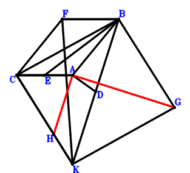
\(\because \) D is the midpoint of KB \(\therefore \small\overrightarrow{AD}=\dfrac{\small\overrightarrow{AB}}{2} + \dfrac{\small\overrightarrow{AK}}{2}\).\(\because \) E is the midpoint of CA \(\therefore \small\overrightarrow{AE}=\dfrac{\small\overrightarrow{AC}}{2}\).\(\because \) FB//CE and FB=2CE \(\therefore \small\overrightarrow{AF}=\small\overrightarrow{AB} + 2 \small\overrightarrow{AC} - 2 \small\overrightarrow{AE}=\small\overrightarrow{AB} + \small\overrightarrow{AC}\).\(\because \) BCKG is a parallelogram \(\therefore \small\overrightarrow{AG}=\small\overrightarrow{AB} - \small\overrightarrow{AC} + \small\overrightarrow{AK}\).\(\because \) C, H, K are collinear and CH=2HK \(\therefore \small\overrightarrow{AH}=\dfrac{\small\overrightarrow{AC}}{3} + \dfrac{2 \small\overrightarrow{AK}}{3}\).\(\because \) CA=2AD \(\therefore \dfrac{\small\overrightarrow{AC}^{2}}{4} - \small\overrightarrow{AD}^{2}=\dfrac{\small\overrightarrow{AC}^{2}}{4} - \left(\dfrac{\small\overrightarrow{AB}}{2} + \dfrac{\small\overrightarrow{AK}}{2}\right)^{2}=- \dfrac{\small\overrightarrow{AB}^{2}}{4} - \dfrac{\small\overrightarrow{AB} \cdot \small\overrightarrow{AK}}{2} + \dfrac{\small\overrightarrow{AC}^{2}}{4} - \dfrac{\small\overrightarrow{AK}^{2}}{4}=0\) . . . . . . \(①\)\(\because \) FK=2AB \(\therefore \small\overrightarrow{BA}^{2} - \dfrac{\small\overrightarrow{KF}^{2}}{4}=\small\overrightarrow{AB}^{2} - \dfrac{\left(\small\overrightarrow{AF} - \small\overrightarrow{AK}\right)^{2}}{4}=\small\overrightarrow{AB}^{2} - \dfrac{\left(\small\overrightarrow{AB} + \small\overrightarrow{AC} - \small\overrightarrow{AK}\right)^{2}}{4}=\dfrac{3 \small\overrightarrow{AB}^{2}}{4} - \dfrac{\small\overrightarrow{AB} \cdot \small\overrightarrow{AC}}{2} + \dfrac{\small\overrightarrow{AB} \cdot \small\overrightarrow{AK}}{2} - \dfrac{\small\overrightarrow{AC}^{2}}{4} + \dfrac{\small\overrightarrow{AC} \cdot \small\overrightarrow{AK}}{2} - \dfrac{\small\overrightarrow{AK}^{2}}{4}=0\) . . . . . . \(②\)In conclusion, \(\small\overrightarrow{AG} \cdot \small\overrightarrow{AH}=\left(\dfrac{\small\overrightarrow{AC}}{3} + \dfrac{2 \small\overrightarrow{AK}}{3}\right) \cdot \left(\small\overrightarrow{AB} - \small\overrightarrow{AC} + \small\overrightarrow{AK}\right)=\dfrac{\small\overrightarrow{AB} \cdot \small\overrightarrow{AC}}{3} + \dfrac{2 \small\overrightarrow{AB} \cdot \small\overrightarrow{AK}}{3} - \dfrac{\small\overrightarrow{AC}^{2}}{3} - \dfrac{\small\overrightarrow{AC} \cdot \small\overrightarrow{AK}}{3} + \dfrac{2 \small\overrightarrow{AK}^{2}}{3}=-2\cdot①-2/3\cdot②=0\), that is, HA⊥AG.
Exercise 3547： Let BCGA and BCEK be parallelograms. C, H, K are collinear and CH=2HK. D, F are the midpoints of KB, EA, respectively. CA=2AD and AB=CF. Prove that GK⊥HA.
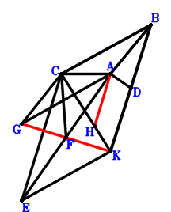
\(\because \) D is the midpoint of KB \(\therefore \small\overrightarrow{AD}=\dfrac{\small\overrightarrow{AB}}{2} + \dfrac{\small\overrightarrow{AK}}{2}\).\(\because \) BCEK is a parallelogram \(\therefore \small\overrightarrow{AE}=- \small\overrightarrow{AB} + \small\overrightarrow{AC} + \small\overrightarrow{AK}\).\(\because \) F is the midpoint of EA \(\therefore \small\overrightarrow{AF}=\dfrac{\small\overrightarrow{AE}}{2}=- \dfrac{\small\overrightarrow{AB}}{2} + \dfrac{\small\overrightarrow{AC}}{2} + \dfrac{\small\overrightarrow{AK}}{2}\).\(\because \) BCGA is a parallelogram \(\therefore \small\overrightarrow{AG}=- \small\overrightarrow{AB} + \small\overrightarrow{AC}\).\(\because \) C, H, K are collinear and CH=2HK \(\therefore \small\overrightarrow{AH}=\dfrac{\small\overrightarrow{AC}}{3} + \dfrac{2 \small\overrightarrow{AK}}{3}\).\(\because \) CA=2AD \(\therefore \dfrac{\small\overrightarrow{AC}^{2}}{4} - \small\overrightarrow{AD}^{2}=\dfrac{\small\overrightarrow{AC}^{2}}{4} - \left(\dfrac{\small\overrightarrow{AB}}{2} + \dfrac{\small\overrightarrow{AK}}{2}\right)^{2}=- \dfrac{\small\overrightarrow{AB}^{2}}{4} - \dfrac{\small\overrightarrow{AB} \cdot \small\overrightarrow{AK}}{2} + \dfrac{\small\overrightarrow{AC}^{2}}{4} - \dfrac{\small\overrightarrow{AK}^{2}}{4}=0\) . . . . . . \(①\)\(\because \) AB=CF \(\therefore \small\overrightarrow{BA}^{2} - \small\overrightarrow{FC}^{2}=\small\overrightarrow{AB}^{2} - \left(\small\overrightarrow{AC} - \small\overrightarrow{AF}\right)^{2}=\small\overrightarrow{AB}^{2} - \left(\dfrac{\small\overrightarrow{AB}}{2} + \dfrac{\small\overrightarrow{AC}}{2} - \dfrac{\small\overrightarrow{AK}}{2}\right)^{2}=\dfrac{3 \small\overrightarrow{AB}^{2}}{4} - \dfrac{\small\overrightarrow{AB} \cdot \small\overrightarrow{AC}}{2} + \dfrac{\small\overrightarrow{AB} \cdot \small\overrightarrow{AK}}{2} - \dfrac{\small\overrightarrow{AC}^{2}}{4} + \dfrac{\small\overrightarrow{AC} \cdot \small\overrightarrow{AK}}{2} - \dfrac{\small\overrightarrow{AK}^{2}}{4}=0\) . . . . . . \(②\)In conclusion, \(\small\overrightarrow{HA} \cdot \small\overrightarrow{KG}=- \small\overrightarrow{AH} \cdot \left(\small\overrightarrow{AG} - \small\overrightarrow{AK}\right)=- \left(\dfrac{\small\overrightarrow{AC}}{3} + \dfrac{2 \small\overrightarrow{AK}}{3}\right) \cdot \left(- \small\overrightarrow{AB} + \small\overrightarrow{AC} - \small\overrightarrow{AK}\right)=\dfrac{\small\overrightarrow{AB} \cdot \small\overrightarrow{AC}}{3} + \dfrac{2 \small\overrightarrow{AB} \cdot \small\overrightarrow{AK}}{3} - \dfrac{\small\overrightarrow{AC}^{2}}{3} - \dfrac{\small\overrightarrow{AC} \cdot \small\overrightarrow{AK}}{3} + \dfrac{2 \small\overrightarrow{AK}^{2}}{3}=-2\cdot①-2/3\cdot②=0\), that is, GK⊥HA.
Exercise 3550： Let ECBK be a parallelogram. C, H, K are collinear and CH=2HK. F is the midpoint of EA. D is the midpoint of KB and CG. CA=2AD and AB=CF. Prove that HA⊥AG.
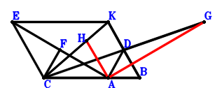
\(\because \) D is the midpoint of KB \(\therefore \small\overrightarrow{AD}=\dfrac{\small\overrightarrow{AB}}{2} + \dfrac{\small\overrightarrow{AK}}{2}\).\(\because \) ECBK is a parallelogram \(\therefore \small\overrightarrow{AE}=- \small\overrightarrow{AB} + \small\overrightarrow{AC} + \small\overrightarrow{AK}\).\(\because \) F is the midpoint of EA \(\therefore \small\overrightarrow{AF}=\dfrac{\small\overrightarrow{AE}}{2}=- \dfrac{\small\overrightarrow{AB}}{2} + \dfrac{\small\overrightarrow{AC}}{2} + \dfrac{\small\overrightarrow{AK}}{2}\).\(\because \) D is the midpoint of CG \(\therefore \small\overrightarrow{AG}=- \small\overrightarrow{AC} + 2 \small\overrightarrow{AD}=\small\overrightarrow{AB} - \small\overrightarrow{AC} + \small\overrightarrow{AK}\).\(\because \) C, H, K are collinear and CH=2HK \(\therefore \small\overrightarrow{AH}=\dfrac{\small\overrightarrow{AC}}{3} + \dfrac{2 \small\overrightarrow{AK}}{3}\).\(\because \) CA=2AD \(\therefore \dfrac{\small\overrightarrow{AC}^{2}}{4} - \small\overrightarrow{AD}^{2}=\dfrac{\small\overrightarrow{AC}^{2}}{4} - \left(\dfrac{\small\overrightarrow{AB}}{2} + \dfrac{\small\overrightarrow{AK}}{2}\right)^{2}=- \dfrac{\small\overrightarrow{AB}^{2}}{4} - \dfrac{\small\overrightarrow{AB} \cdot \small\overrightarrow{AK}}{2} + \dfrac{\small\overrightarrow{AC}^{2}}{4} - \dfrac{\small\overrightarrow{AK}^{2}}{4}=0\) . . . . . . \(①\)\(\because \) AB=CF \(\therefore \small\overrightarrow{BA}^{2} - \small\overrightarrow{FC}^{2}=\small\overrightarrow{AB}^{2} - \left(\small\overrightarrow{AC} - \small\overrightarrow{AF}\right)^{2}=\small\overrightarrow{AB}^{2} - \left(\dfrac{\small\overrightarrow{AB}}{2} + \dfrac{\small\overrightarrow{AC}}{2} - \dfrac{\small\overrightarrow{AK}}{2}\right)^{2}=\dfrac{3 \small\overrightarrow{AB}^{2}}{4} - \dfrac{\small\overrightarrow{AB} \cdot \small\overrightarrow{AC}}{2} + \dfrac{\small\overrightarrow{AB} \cdot \small\overrightarrow{AK}}{2} - \dfrac{\small\overrightarrow{AC}^{2}}{4} + \dfrac{\small\overrightarrow{AC} \cdot \small\overrightarrow{AK}}{2} - \dfrac{\small\overrightarrow{AK}^{2}}{4}=0\) . . . . . . \(②\)In conclusion, \(\small\overrightarrow{AG} \cdot \small\overrightarrow{AH}=\left(\dfrac{\small\overrightarrow{AC}}{3} + \dfrac{2 \small\overrightarrow{AK}}{3}\right) \cdot \left(\small\overrightarrow{AB} - \small\overrightarrow{AC} + \small\overrightarrow{AK}\right)=\dfrac{\small\overrightarrow{AB} \cdot \small\overrightarrow{AC}}{3} + \dfrac{2 \small\overrightarrow{AB} \cdot \small\overrightarrow{AK}}{3} - \dfrac{\small\overrightarrow{AC}^{2}}{3} - \dfrac{\small\overrightarrow{AC} \cdot \small\overrightarrow{AK}}{3} + \dfrac{2 \small\overrightarrow{AK}^{2}}{3}=-2\cdot①-2/3\cdot②=0\), that is, HA⊥AG.
Exercise 3558： Let KCBG be a parallelogram. E is the centroid of △KCA. F, E, B are collinear and FB=3FE. C, H, K are collinear and CH=2HK. D is the midpoint of KB. CA=2AD and AB=CF. Prove that HA⊥AG.
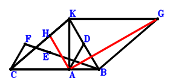
\(\because \) D is the midpoint of KB \(\therefore \small\overrightarrow{AD}=\dfrac{\small\overrightarrow{AB}}{2} + \dfrac{\small\overrightarrow{AK}}{2}\).\(\because \) E is the centroid of △KCA \(\therefore \small\overrightarrow{AE}=\dfrac{\small\overrightarrow{AC}}{3} + \dfrac{\small\overrightarrow{AK}}{3}\).\(\because \) F, E, B are collinear and FB=3FE \(\therefore \small\overrightarrow{AF}=- \dfrac{\small\overrightarrow{AB}}{2} + \dfrac{3 \small\overrightarrow{AE}}{2}=- \dfrac{\small\overrightarrow{AB}}{2} + \dfrac{\small\overrightarrow{AC}}{2} + \dfrac{\small\overrightarrow{AK}}{2}\).\(\because \) KCBG is a parallelogram \(\therefore \small\overrightarrow{AG}=\small\overrightarrow{AB} - \small\overrightarrow{AC} + \small\overrightarrow{AK}\).\(\because \) C, H, K are collinear and CH=2HK \(\therefore \small\overrightarrow{AH}=\dfrac{\small\overrightarrow{AC}}{3} + \dfrac{2 \small\overrightarrow{AK}}{3}\).\(\because \) CA=2AD \(\therefore \dfrac{\small\overrightarrow{AC}^{2}}{4} - \small\overrightarrow{AD}^{2}=\dfrac{\small\overrightarrow{AC}^{2}}{4} - \left(\dfrac{\small\overrightarrow{AB}}{2} + \dfrac{\small\overrightarrow{AK}}{2}\right)^{2}=- \dfrac{\small\overrightarrow{AB}^{2}}{4} - \dfrac{\small\overrightarrow{AB} \cdot \small\overrightarrow{AK}}{2} + \dfrac{\small\overrightarrow{AC}^{2}}{4} - \dfrac{\small\overrightarrow{AK}^{2}}{4}=0\) . . . . . . \(①\)\(\because \) AB=CF \(\therefore \small\overrightarrow{BA}^{2} - \small\overrightarrow{FC}^{2}=\small\overrightarrow{AB}^{2} - \left(\small\overrightarrow{AC} - \small\overrightarrow{AF}\right)^{2}=\small\overrightarrow{AB}^{2} - \left(\dfrac{\small\overrightarrow{AB}}{2} + \dfrac{\small\overrightarrow{AC}}{2} - \dfrac{\small\overrightarrow{AK}}{2}\right)^{2}=\dfrac{3 \small\overrightarrow{AB}^{2}}{4} - \dfrac{\small\overrightarrow{AB} \cdot \small\overrightarrow{AC}}{2} + \dfrac{\small\overrightarrow{AB} \cdot \small\overrightarrow{AK}}{2} - \dfrac{\small\overrightarrow{AC}^{2}}{4} + \dfrac{\small\overrightarrow{AC} \cdot \small\overrightarrow{AK}}{2} - \dfrac{\small\overrightarrow{AK}^{2}}{4}=0\) . . . . . . \(②\)In conclusion, \(\small\overrightarrow{AG} \cdot \small\overrightarrow{AH}=\left(\dfrac{\small\overrightarrow{AC}}{3} + \dfrac{2 \small\overrightarrow{AK}}{3}\right) \cdot \left(\small\overrightarrow{AB} - \small\overrightarrow{AC} + \small\overrightarrow{AK}\right)=\dfrac{\small\overrightarrow{AB} \cdot \small\overrightarrow{AC}}{3} + \dfrac{2 \small\overrightarrow{AB} \cdot \small\overrightarrow{AK}}{3} - \dfrac{\small\overrightarrow{AC}^{2}}{3} - \dfrac{\small\overrightarrow{AC} \cdot \small\overrightarrow{AK}}{3} + \dfrac{2 \small\overrightarrow{AK}^{2}}{3}=-2\cdot①-2/3\cdot②=0\), that is, HA⊥AG.
Exercise 3582： Let EABK be a parallelogram. C, H, K are collinear and CH=2HK. A is the midpoint of KD. F is the midpoint of CA and GK. CE=2AB and CA=DB. Prove that GB⊥HA.
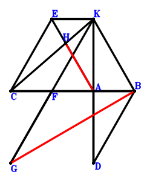
\(\because \) A is the midpoint of KD \(\therefore \small\overrightarrow{AD}=- \small\overrightarrow{AK}\).\(\because \) EABK is a parallelogram \(\therefore \small\overrightarrow{AE}=- \small\overrightarrow{AB} + \small\overrightarrow{AK}\).\(\because \) F is the midpoint of CA \(\therefore \small\overrightarrow{AF}=\dfrac{\small\overrightarrow{AC}}{2}\).\(\because \) F is the midpoint of GK \(\therefore \small\overrightarrow{AG}=2 \small\overrightarrow{AF} - \small\overrightarrow{AK}=\small\overrightarrow{AC} - \small\overrightarrow{AK}\).\(\because \) C, H, K are collinear and CH=2HK \(\therefore \small\overrightarrow{AH}=\dfrac{\small\overrightarrow{AC}}{3} + \dfrac{2 \small\overrightarrow{AK}}{3}\).\(\because \) CA=DB \(\therefore \small\overrightarrow{CA}^{2} - \small\overrightarrow{DB}^{2}=\small\overrightarrow{AC}^{2} - \left(\small\overrightarrow{AB} - \small\overrightarrow{AD}\right)^{2}=\small\overrightarrow{AC}^{2} - \left(\small\overrightarrow{AB} + \small\overrightarrow{AK}\right)^{2}=- \small\overrightarrow{AB}^{2} - 2 \small\overrightarrow{AB} \cdot \small\overrightarrow{AK} + \small\overrightarrow{AC}^{2} - \small\overrightarrow{AK}^{2}=0\) . . . . . . \(①\)\(\because \) CE=2AB \(\therefore \small\overrightarrow{BA}^{2} - \dfrac{\small\overrightarrow{EC}^{2}}{4}=\small\overrightarrow{AB}^{2} - \dfrac{\left(\small\overrightarrow{AC} - \small\overrightarrow{AE}\right)^{2}}{4}=\small\overrightarrow{AB}^{2} - \dfrac{\left(\small\overrightarrow{AB} + \small\overrightarrow{AC} - \small\overrightarrow{AK}\right)^{2}}{4}=\dfrac{3 \small\overrightarrow{AB}^{2}}{4} - \dfrac{\small\overrightarrow{AB} \cdot \small\overrightarrow{AC}}{2} + \dfrac{\small\overrightarrow{AB} \cdot \small\overrightarrow{AK}}{2} - \dfrac{\small\overrightarrow{AC}^{2}}{4} + \dfrac{\small\overrightarrow{AC} \cdot \small\overrightarrow{AK}}{2} - \dfrac{\small\overrightarrow{AK}^{2}}{4}=0\) . . . . . . \(②\)In conclusion, \(\small\overrightarrow{BG} \cdot \small\overrightarrow{HA}=- \small\overrightarrow{AH} \cdot \left(- \small\overrightarrow{AB} + \small\overrightarrow{AG}\right)=- \left(\dfrac{\small\overrightarrow{AC}}{3} + \dfrac{2 \small\overrightarrow{AK}}{3}\right) \cdot \left(- \small\overrightarrow{AB} + \small\overrightarrow{AC} - \small\overrightarrow{AK}\right)=\dfrac{\small\overrightarrow{AB} \cdot \small\overrightarrow{AC}}{3} + \dfrac{2 \small\overrightarrow{AB} \cdot \small\overrightarrow{AK}}{3} - \dfrac{\small\overrightarrow{AC}^{2}}{3} - \dfrac{\small\overrightarrow{AC} \cdot \small\overrightarrow{AK}}{3} + \dfrac{2 \small\overrightarrow{AK}^{2}}{3}=-1/2\cdot①-2/3\cdot②=0\), that is, GB⊥HA.
Exercise 3613： Let KCDE be a trapezoid with KE//CD and KE=2CD. C, I, K are collinear and CI=2IK. A, D are the midpoints of KF, CA, respectively. G is the midpoint of KB and CH. CA=FB and BE=2AB. Prove that IA⊥AH.
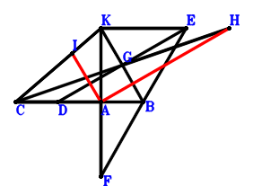
\(\because \) D is the midpoint of CA \(\therefore \small\overrightarrow{AD}=\dfrac{\small\overrightarrow{AC}}{2}\).\(\because \) KE//CD and KE=2CD \(\therefore \small\overrightarrow{AE}=- 2 \small\overrightarrow{AC} + 2 \small\overrightarrow{AD} + \small\overrightarrow{AK}=- \small\overrightarrow{AC} + \small\overrightarrow{AK}\).\(\because \) A is the midpoint of KF \(\therefore \small\overrightarrow{AF}=- \small\overrightarrow{AK}\).\(\because \) G is the midpoint of KB \(\therefore \small\overrightarrow{AG}=\dfrac{\small\overrightarrow{AB}}{2} + \dfrac{\small\overrightarrow{AK}}{2}\).\(\because \) G is the midpoint of CH \(\therefore \small\overrightarrow{AH}=- \small\overrightarrow{AC} + 2 \small\overrightarrow{AG}=\small\overrightarrow{AB} - \small\overrightarrow{AC} + \small\overrightarrow{AK}\).\(\because \) C, I, K are collinear and CI=2IK \(\therefore \small\overrightarrow{AI}=\dfrac{\small\overrightarrow{AC}}{3} + \dfrac{2 \small\overrightarrow{AK}}{3}\).\(\because \) BE=2AB \(\therefore \small\overrightarrow{BA}^{2} - \dfrac{\small\overrightarrow{EB}^{2}}{4}=\small\overrightarrow{AB}^{2} - \dfrac{\left(\small\overrightarrow{AB} - \small\overrightarrow{AE}\right)^{2}}{4}=\small\overrightarrow{AB}^{2} - \dfrac{\left(\small\overrightarrow{AB} + \small\overrightarrow{AC} - \small\overrightarrow{AK}\right)^{2}}{4}=\dfrac{3 \small\overrightarrow{AB}^{2}}{4} - \dfrac{\small\overrightarrow{AB} \cdot \small\overrightarrow{AC}}{2} + \dfrac{\small\overrightarrow{AB} \cdot \small\overrightarrow{AK}}{2} - \dfrac{\small\overrightarrow{AC}^{2}}{4} + \dfrac{\small\overrightarrow{AC} \cdot \small\overrightarrow{AK}}{2} - \dfrac{\small\overrightarrow{AK}^{2}}{4}=0\) . . . . . . \(①\)\(\because \) CA=FB \(\therefore \small\overrightarrow{CA}^{2} - \small\overrightarrow{FB}^{2}=\small\overrightarrow{AC}^{2} - \left(\small\overrightarrow{AB} - \small\overrightarrow{AF}\right)^{2}=\small\overrightarrow{AC}^{2} - \left(\small\overrightarrow{AB} + \small\overrightarrow{AK}\right)^{2}=- \small\overrightarrow{AB}^{2} - 2 \small\overrightarrow{AB} \cdot \small\overrightarrow{AK} + \small\overrightarrow{AC}^{2} - \small\overrightarrow{AK}^{2}=0\) . . . . . . \(②\)In conclusion, \(\small\overrightarrow{AH} \cdot \small\overrightarrow{AI}=\left(\dfrac{\small\overrightarrow{AC}}{3} + \dfrac{2 \small\overrightarrow{AK}}{3}\right) \cdot \left(\small\overrightarrow{AB} - \small\overrightarrow{AC} + \small\overrightarrow{AK}\right)=\dfrac{\small\overrightarrow{AB} \cdot \small\overrightarrow{AC}}{3} + \dfrac{2 \small\overrightarrow{AB} \cdot \small\overrightarrow{AK}}{3} - \dfrac{\small\overrightarrow{AC}^{2}}{3} - \dfrac{\small\overrightarrow{AC} \cdot \small\overrightarrow{AK}}{3} + \dfrac{2 \small\overrightarrow{AK}^{2}}{3}=-2/3\cdot①-1/2\cdot②=0\), that is, IA⊥AH.
Exercise 3695： Let BCEA and BAKH be parallelograms. C, G, K are collinear and CG=2GK. A, F are the midpoints of DK, EK, respectively. AB=CF and CA=DB. Prove that GA⊥CH.
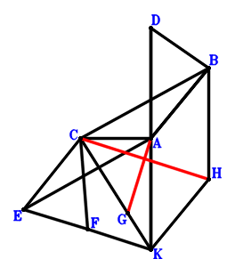
\(\because \) A is the midpoint of DK \(\therefore \small\overrightarrow{AD}=- \small\overrightarrow{AK}\).\(\because \) BCEA is a parallelogram \(\therefore \small\overrightarrow{AE}=- \small\overrightarrow{AB} + \small\overrightarrow{AC}\).\(\because \) F is the midpoint of EK \(\therefore \small\overrightarrow{AF}=\dfrac{\small\overrightarrow{AE}}{2} + \dfrac{\small\overrightarrow{AK}}{2}=- \dfrac{\small\overrightarrow{AB}}{2} + \dfrac{\small\overrightarrow{AC}}{2} + \dfrac{\small\overrightarrow{AK}}{2}\).\(\because \) C, G, K are collinear and CG=2GK \(\therefore \small\overrightarrow{AG}=\dfrac{\small\overrightarrow{AC}}{3} + \dfrac{2 \small\overrightarrow{AK}}{3}\).\(\because \) BAKH is a parallelogram \(\therefore \small\overrightarrow{AH}=\small\overrightarrow{AB} + \small\overrightarrow{AK}\).\(\because \) CA=DB \(\therefore \small\overrightarrow{CA}^{2} - \small\overrightarrow{DB}^{2}=\small\overrightarrow{AC}^{2} - \left(\small\overrightarrow{AB} - \small\overrightarrow{AD}\right)^{2}=\small\overrightarrow{AC}^{2} - \left(\small\overrightarrow{AB} + \small\overrightarrow{AK}\right)^{2}=- \small\overrightarrow{AB}^{2} - 2 \small\overrightarrow{AB} \cdot \small\overrightarrow{AK} + \small\overrightarrow{AC}^{2} - \small\overrightarrow{AK}^{2}=0\) . . . . . . \(①\)\(\because \) AB=CF \(\therefore \small\overrightarrow{BA}^{2} - \small\overrightarrow{FC}^{2}=\small\overrightarrow{AB}^{2} - \left(\small\overrightarrow{AC} - \small\overrightarrow{AF}\right)^{2}=\small\overrightarrow{AB}^{2} - \left(\dfrac{\small\overrightarrow{AB}}{2} + \dfrac{\small\overrightarrow{AC}}{2} - \dfrac{\small\overrightarrow{AK}}{2}\right)^{2}=\dfrac{3 \small\overrightarrow{AB}^{2}}{4} - \dfrac{\small\overrightarrow{AB} \cdot \small\overrightarrow{AC}}{2} + \dfrac{\small\overrightarrow{AB} \cdot \small\overrightarrow{AK}}{2} - \dfrac{\small\overrightarrow{AC}^{2}}{4} + \dfrac{\small\overrightarrow{AC} \cdot \small\overrightarrow{AK}}{2} - \dfrac{\small\overrightarrow{AK}^{2}}{4}=0\) . . . . . . \(②\)In conclusion, \(\small\overrightarrow{GA} \cdot \small\overrightarrow{HC}=- \small\overrightarrow{AG} \cdot \left(\small\overrightarrow{AC} - \small\overrightarrow{AH}\right)=- \left(\dfrac{\small\overrightarrow{AC}}{3} + \dfrac{2 \small\overrightarrow{AK}}{3}\right) \cdot \left(- \small\overrightarrow{AB} + \small\overrightarrow{AC} - \small\overrightarrow{AK}\right)=\dfrac{\small\overrightarrow{AB} \cdot \small\overrightarrow{AC}}{3} + \dfrac{2 \small\overrightarrow{AB} \cdot \small\overrightarrow{AK}}{3} - \dfrac{\small\overrightarrow{AC}^{2}}{3} - \dfrac{\small\overrightarrow{AC} \cdot \small\overrightarrow{AK}}{3} + \dfrac{2 \small\overrightarrow{AK}^{2}}{3}=-1/2\cdot①-2/3\cdot②=0\), that is, GA⊥CH.
Exercise 3699： Let BCEA be a parallelogram. C, I, K are collinear and CI=2IK. A, F are the midpoints of DK, EK, respectively. G is the midpoint of HK and CA. AB=CF and CA=DB. Prove that HB⊥IA.
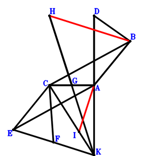
\(\because \) A is the midpoint of DK \(\therefore \small\overrightarrow{AD}=- \small\overrightarrow{AK}\).\(\because \) BCEA is a parallelogram \(\therefore \small\overrightarrow{AE}=- \small\overrightarrow{AB} + \small\overrightarrow{AC}\).\(\because \) F is the midpoint of EK \(\therefore \small\overrightarrow{AF}=\dfrac{\small\overrightarrow{AE}}{2} + \dfrac{\small\overrightarrow{AK}}{2}=- \dfrac{\small\overrightarrow{AB}}{2} + \dfrac{\small\overrightarrow{AC}}{2} + \dfrac{\small\overrightarrow{AK}}{2}\).\(\because \) G is the midpoint of CA \(\therefore \small\overrightarrow{AG}=\dfrac{\small\overrightarrow{AC}}{2}\).\(\because \) G is the midpoint of HK \(\therefore \small\overrightarrow{AH}=2 \small\overrightarrow{AG} - \small\overrightarrow{AK}=\small\overrightarrow{AC} - \small\overrightarrow{AK}\).\(\because \) C, I, K are collinear and CI=2IK \(\therefore \small\overrightarrow{AI}=\dfrac{\small\overrightarrow{AC}}{3} + \dfrac{2 \small\overrightarrow{AK}}{3}\).\(\because \) CA=DB \(\therefore \small\overrightarrow{CA}^{2} - \small\overrightarrow{DB}^{2}=\small\overrightarrow{AC}^{2} - \left(\small\overrightarrow{AB} - \small\overrightarrow{AD}\right)^{2}=\small\overrightarrow{AC}^{2} - \left(\small\overrightarrow{AB} + \small\overrightarrow{AK}\right)^{2}=- \small\overrightarrow{AB}^{2} - 2 \small\overrightarrow{AB} \cdot \small\overrightarrow{AK} + \small\overrightarrow{AC}^{2} - \small\overrightarrow{AK}^{2}=0\) . . . . . . \(①\)\(\because \) AB=CF \(\therefore \small\overrightarrow{BA}^{2} - \small\overrightarrow{FC}^{2}=\small\overrightarrow{AB}^{2} - \left(\small\overrightarrow{AC} - \small\overrightarrow{AF}\right)^{2}=\small\overrightarrow{AB}^{2} - \left(\dfrac{\small\overrightarrow{AB}}{2} + \dfrac{\small\overrightarrow{AC}}{2} - \dfrac{\small\overrightarrow{AK}}{2}\right)^{2}=\dfrac{3 \small\overrightarrow{AB}^{2}}{4} - \dfrac{\small\overrightarrow{AB} \cdot \small\overrightarrow{AC}}{2} + \dfrac{\small\overrightarrow{AB} \cdot \small\overrightarrow{AK}}{2} - \dfrac{\small\overrightarrow{AC}^{2}}{4} + \dfrac{\small\overrightarrow{AC} \cdot \small\overrightarrow{AK}}{2} - \dfrac{\small\overrightarrow{AK}^{2}}{4}=0\) . . . . . . \(②\)In conclusion, \(\small\overrightarrow{BH} \cdot \small\overrightarrow{IA}=- \small\overrightarrow{AI} \cdot \left(- \small\overrightarrow{AB} + \small\overrightarrow{AH}\right)=- \left(\dfrac{\small\overrightarrow{AC}}{3} + \dfrac{2 \small\overrightarrow{AK}}{3}\right) \cdot \left(- \small\overrightarrow{AB} + \small\overrightarrow{AC} - \small\overrightarrow{AK}\right)=\dfrac{\small\overrightarrow{AB} \cdot \small\overrightarrow{AC}}{3} + \dfrac{2 \small\overrightarrow{AB} \cdot \small\overrightarrow{AK}}{3} - \dfrac{\small\overrightarrow{AC}^{2}}{3} - \dfrac{\small\overrightarrow{AC} \cdot \small\overrightarrow{AK}}{3} + \dfrac{2 \small\overrightarrow{AK}^{2}}{3}=-1/2\cdot①-2/3\cdot②=0\), that is, HB⊥IA.
Exercise 3728： Let KCGA be a parallelogram. E is the centroid of △KCA. C, H, K are collinear and CH=2HK. F, E, B are collinear and FB=3FE. A is the midpoint of KD. AB=CF and CA=DB. Prove that GB⊥HA.
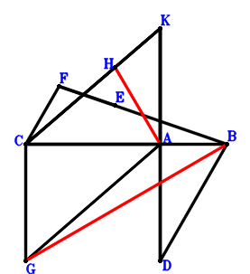
\(\because \) A is the midpoint of KD \(\therefore \small\overrightarrow{AD}=- \small\overrightarrow{AK}\).\(\because \) E is the centroid of △KCA \(\therefore \small\overrightarrow{AE}=\dfrac{\small\overrightarrow{AC}}{3} + \dfrac{\small\overrightarrow{AK}}{3}\).\(\because \) F, E, B are collinear and FB=3FE \(\therefore \small\overrightarrow{AF}=- \dfrac{\small\overrightarrow{AB}}{2} + \dfrac{3 \small\overrightarrow{AE}}{2}=- \dfrac{\small\overrightarrow{AB}}{2} + \dfrac{\small\overrightarrow{AC}}{2} + \dfrac{\small\overrightarrow{AK}}{2}\).\(\because \) KCGA is a parallelogram \(\therefore \small\overrightarrow{AG}=\small\overrightarrow{AC} - \small\overrightarrow{AK}\).\(\because \) C, H, K are collinear and CH=2HK \(\therefore \small\overrightarrow{AH}=\dfrac{\small\overrightarrow{AC}}{3} + \dfrac{2 \small\overrightarrow{AK}}{3}\).\(\because \) CA=DB \(\therefore \small\overrightarrow{CA}^{2} - \small\overrightarrow{DB}^{2}=\small\overrightarrow{AC}^{2} - \left(\small\overrightarrow{AB} - \small\overrightarrow{AD}\right)^{2}=\small\overrightarrow{AC}^{2} - \left(\small\overrightarrow{AB} + \small\overrightarrow{AK}\right)^{2}=- \small\overrightarrow{AB}^{2} - 2 \small\overrightarrow{AB} \cdot \small\overrightarrow{AK} + \small\overrightarrow{AC}^{2} - \small\overrightarrow{AK}^{2}=0\) . . . . . . \(①\)\(\because \) AB=CF \(\therefore \small\overrightarrow{BA}^{2} - \small\overrightarrow{FC}^{2}=\small\overrightarrow{AB}^{2} - \left(\small\overrightarrow{AC} - \small\overrightarrow{AF}\right)^{2}=\small\overrightarrow{AB}^{2} - \left(\dfrac{\small\overrightarrow{AB}}{2} + \dfrac{\small\overrightarrow{AC}}{2} - \dfrac{\small\overrightarrow{AK}}{2}\right)^{2}=\dfrac{3 \small\overrightarrow{AB}^{2}}{4} - \dfrac{\small\overrightarrow{AB} \cdot \small\overrightarrow{AC}}{2} + \dfrac{\small\overrightarrow{AB} \cdot \small\overrightarrow{AK}}{2} - \dfrac{\small\overrightarrow{AC}^{2}}{4} + \dfrac{\small\overrightarrow{AC} \cdot \small\overrightarrow{AK}}{2} - \dfrac{\small\overrightarrow{AK}^{2}}{4}=0\) . . . . . . \(②\)In conclusion, \(\small\overrightarrow{BG} \cdot \small\overrightarrow{HA}=- \small\overrightarrow{AH} \cdot \left(- \small\overrightarrow{AB} + \small\overrightarrow{AG}\right)=- \left(\dfrac{\small\overrightarrow{AC}}{3} + \dfrac{2 \small\overrightarrow{AK}}{3}\right) \cdot \left(- \small\overrightarrow{AB} + \small\overrightarrow{AC} - \small\overrightarrow{AK}\right)=\dfrac{\small\overrightarrow{AB} \cdot \small\overrightarrow{AC}}{3} + \dfrac{2 \small\overrightarrow{AB} \cdot \small\overrightarrow{AK}}{3} - \dfrac{\small\overrightarrow{AC}^{2}}{3} - \dfrac{\small\overrightarrow{AC} \cdot \small\overrightarrow{AK}}{3} + \dfrac{2 \small\overrightarrow{AK}^{2}}{3}=-1/2\cdot①-2/3\cdot②=0\), that is, GB⊥HA.
Exercise 3749： Let EBAK and KFAC be parallelograms. K, G, C are collinear and GC=2KG. D is the midpoint of BK and EA. \(BA=\dfrac{\sqrt{3}}{2}EA\) and \(AC=\dfrac{\sqrt{3}}{3}BF\). Prove that AG⊥EC.
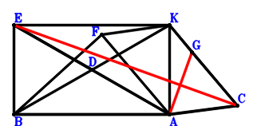
\(\because \) D is the midpoint of BK \(\therefore \small\overrightarrow{AD}=\dfrac{\small\overrightarrow{AB}}{2} + \dfrac{\small\overrightarrow{AK}}{2}\).\(\because \) D is the midpoint of EA \(\therefore \small\overrightarrow{AE}=2 \small\overrightarrow{AD}=\small\overrightarrow{AB} + \small\overrightarrow{AK}\).\(\because \) KFAC is a parallelogram \(\therefore \small\overrightarrow{AF}=- \small\overrightarrow{AC} + \small\overrightarrow{AK}\).\(\because \) K, G, C are collinear and GC=2KG \(\therefore \small\overrightarrow{AG}=\dfrac{\small\overrightarrow{AC}}{3} + \dfrac{2 \small\overrightarrow{AK}}{3}\).\(\because \) EBAK is a parallelogram \(\therefore \small\overrightarrow{AB}^{2} - \dfrac{3 \small\overrightarrow{AE}^{2}}{4}=\small\overrightarrow{AB}^{2} - \dfrac{3 \left(\small\overrightarrow{AB} + \small\overrightarrow{AK}\right)^{2}}{4}=\dfrac{\small\overrightarrow{AB}^{2}}{4} - \dfrac{3 \small\overrightarrow{AB} \cdot \small\overrightarrow{AK}}{2} - \dfrac{3 \small\overrightarrow{AK}^{2}}{4}=0\) . . . . . . \(①\)\(\because \) \(BA=\dfrac{\sqrt{3}}{2}EA\) \(\therefore 3 \small\overrightarrow{CA}^{2} - \small\overrightarrow{FB}^{2}=3 \small\overrightarrow{AC}^{2} - \left(\small\overrightarrow{AB} - \small\overrightarrow{AF}\right)^{2}=3 \small\overrightarrow{AC}^{2} - \left(\small\overrightarrow{AB} + \small\overrightarrow{AC} - \small\overrightarrow{AK}\right)^{2}=- \small\overrightarrow{AB}^{2} - 2 \small\overrightarrow{AB} \cdot \small\overrightarrow{AC} + 2 \small\overrightarrow{AB} \cdot \small\overrightarrow{AK} + 2 \small\overrightarrow{AC}^{2} + 2 \small\overrightarrow{AC} \cdot \small\overrightarrow{AK} - \small\overrightarrow{AK}^{2}=0\) . . . . . . \(②\)In conclusion, \(\small\overrightarrow{EC} \cdot \small\overrightarrow{GA}=- \small\overrightarrow{AG} \cdot \left(\small\overrightarrow{AC} - \small\overrightarrow{AE}\right)=- \left(\dfrac{\small\overrightarrow{AC}}{3} + \dfrac{2 \small\overrightarrow{AK}}{3}\right) \cdot \left(- \small\overrightarrow{AB} + \small\overrightarrow{AC} - \small\overrightarrow{AK}\right)=\dfrac{\small\overrightarrow{AB} \cdot \small\overrightarrow{AC}}{3} + \dfrac{2 \small\overrightarrow{AB} \cdot \small\overrightarrow{AK}}{3} - \dfrac{\small\overrightarrow{AC}^{2}}{3} - \dfrac{\small\overrightarrow{AC} \cdot \small\overrightarrow{AK}}{3} + \dfrac{2 \small\overrightarrow{AK}^{2}}{3}=-2/3\cdot①-1/6\cdot②=0\), that is, AG⊥EC.
Exercise 3910： Let DCKB be a parallelogram. C, G, K are collinear and CG=2GK. E is the midpoint of CF and BK. \(CA=\dfrac{\sqrt{3}}{3}DA\) and \(BA=\sqrt{3}AE\). Prove that GA⊥AF.
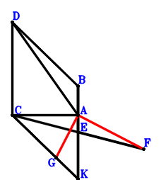
\(\because \) DCKB is a parallelogram \(\therefore \small\overrightarrow{AD}=\small\overrightarrow{AB} + \small\overrightarrow{AC} - \small\overrightarrow{AK}\).\(\because \) E is the midpoint of BK \(\therefore \small\overrightarrow{AE}=\dfrac{\small\overrightarrow{AB}}{2} + \dfrac{\small\overrightarrow{AK}}{2}\).\(\because \) E is the midpoint of CF \(\therefore \small\overrightarrow{AF}=- \small\overrightarrow{AC} + 2 \small\overrightarrow{AE}=\small\overrightarrow{AB} - \small\overrightarrow{AC} + \small\overrightarrow{AK}\).\(\because \) C, G, K are collinear and CG=2GK \(\therefore \small\overrightarrow{AG}=\dfrac{\small\overrightarrow{AC}}{3} + \dfrac{2 \small\overrightarrow{AK}}{3}\).\(\because \) \(CA=\dfrac{\sqrt{3}}{3}DA\) \(\therefore 3 \small\overrightarrow{AC}^{2} - \small\overrightarrow{AD}^{2}=3 \small\overrightarrow{AC}^{2} - \left(\small\overrightarrow{AB} + \small\overrightarrow{AC} - \small\overrightarrow{AK}\right)^{2}=- \small\overrightarrow{AB}^{2} - 2 \small\overrightarrow{AB} \cdot \small\overrightarrow{AC} + 2 \small\overrightarrow{AB} \cdot \small\overrightarrow{AK} + 2 \small\overrightarrow{AC}^{2} + 2 \small\overrightarrow{AC} \cdot \small\overrightarrow{AK} - \small\overrightarrow{AK}^{2}=0\) . . . . . . \(①\)\(\because \) \(BA=\sqrt{3}AE\) \(\therefore \small\overrightarrow{AB}^{2} - 3 \small\overrightarrow{AE}^{2}=\small\overrightarrow{AB}^{2} - 3 \left(\dfrac{\small\overrightarrow{AB}}{2} + \dfrac{\small\overrightarrow{AK}}{2}\right)^{2}=\dfrac{\small\overrightarrow{AB}^{2}}{4} - \dfrac{3 \small\overrightarrow{AB} \cdot \small\overrightarrow{AK}}{2} - \dfrac{3 \small\overrightarrow{AK}^{2}}{4}=0\) . . . . . . \(②\)In conclusion, \(\small\overrightarrow{AF} \cdot \small\overrightarrow{AG}=\left(\dfrac{\small\overrightarrow{AC}}{3} + \dfrac{2 \small\overrightarrow{AK}}{3}\right) \cdot \left(\small\overrightarrow{AB} - \small\overrightarrow{AC} + \small\overrightarrow{AK}\right)=\dfrac{\small\overrightarrow{AB} \cdot \small\overrightarrow{AC}}{3} + \dfrac{2 \small\overrightarrow{AB} \cdot \small\overrightarrow{AK}}{3} - \dfrac{\small\overrightarrow{AC}^{2}}{3} - \dfrac{\small\overrightarrow{AC} \cdot \small\overrightarrow{AK}}{3} + \dfrac{2 \small\overrightarrow{AK}^{2}}{3}=-1/6\cdot①-2/3\cdot②=0\), that is, GA⊥AF.
Exercise 4379： Let BCDA and GBAK be parallelograms. C, H, K are collinear and CH=2HK. E is the midpoint of KD. F is the midpoint of BK and GA. \(CA=\dfrac{2 \sqrt{3}}{3}CE\) and \(BA=\dfrac{\sqrt{3}}{2}GA\). Prove that HA⊥GC.
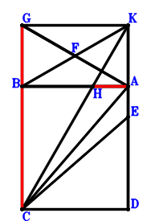
\(\because \) BCDA is a parallelogram \(\therefore \small\overrightarrow{AD}=- \small\overrightarrow{AB} + \small\overrightarrow{AC}\).\(\because \) E is the midpoint of KD \(\therefore \small\overrightarrow{AE}=\dfrac{\small\overrightarrow{AD}}{2} + \dfrac{\small\overrightarrow{AK}}{2}=- \dfrac{\small\overrightarrow{AB}}{2} + \dfrac{\small\overrightarrow{AC}}{2} + \dfrac{\small\overrightarrow{AK}}{2}\).\(\because \) F is the midpoint of BK \(\therefore \small\overrightarrow{AF}=\dfrac{\small\overrightarrow{AB}}{2} + \dfrac{\small\overrightarrow{AK}}{2}\).\(\because \) F is the midpoint of GA \(\therefore \small\overrightarrow{AG}=2 \small\overrightarrow{AF}=\small\overrightarrow{AB} + \small\overrightarrow{AK}\).\(\because \) C, H, K are collinear and CH=2HK \(\therefore \small\overrightarrow{AH}=\dfrac{\small\overrightarrow{AC}}{3} + \dfrac{2 \small\overrightarrow{AK}}{3}\).\(\because \) GBAK is a parallelogram \(\therefore \dfrac{3 \small\overrightarrow{CA}^{2}}{4} - \small\overrightarrow{EC}^{2}=\dfrac{3 \small\overrightarrow{AC}^{2}}{4} - \left(\small\overrightarrow{AC} - \small\overrightarrow{AE}\right)^{2}=\dfrac{3 \small\overrightarrow{AC}^{2}}{4} - \left(\dfrac{\small\overrightarrow{AB}}{2} + \dfrac{\small\overrightarrow{AC}}{2} - \dfrac{\small\overrightarrow{AK}}{2}\right)^{2}=- \dfrac{\small\overrightarrow{AB}^{2}}{4} - \dfrac{\small\overrightarrow{AB} \cdot \small\overrightarrow{AC}}{2} + \dfrac{\small\overrightarrow{AB} \cdot \small\overrightarrow{AK}}{2} + \dfrac{\small\overrightarrow{AC}^{2}}{2} + \dfrac{\small\overrightarrow{AC} \cdot \small\overrightarrow{AK}}{2} - \dfrac{\small\overrightarrow{AK}^{2}}{4}=0\) . . . . . . \(①\)\(\because \) \(CA=\dfrac{2 \sqrt{3}}{3}CE\) \(\therefore \small\overrightarrow{AB}^{2} - \dfrac{3 \small\overrightarrow{AG}^{2}}{4}=\small\overrightarrow{AB}^{2} - \dfrac{3 \left(\small\overrightarrow{AB} + \small\overrightarrow{AK}\right)^{2}}{4}=\dfrac{\small\overrightarrow{AB}^{2}}{4} - \dfrac{3 \small\overrightarrow{AB} \cdot \small\overrightarrow{AK}}{2} - \dfrac{3 \small\overrightarrow{AK}^{2}}{4}=0\) . . . . . . \(②\)In conclusion, \(\small\overrightarrow{GC} \cdot \small\overrightarrow{HA}=- \small\overrightarrow{AH} \cdot \left(\small\overrightarrow{AC} - \small\overrightarrow{AG}\right)=- \left(\dfrac{\small\overrightarrow{AC}}{3} + \dfrac{2 \small\overrightarrow{AK}}{3}\right) \cdot \left(- \small\overrightarrow{AB} + \small\overrightarrow{AC} - \small\overrightarrow{AK}\right)=\dfrac{\small\overrightarrow{AB} \cdot \small\overrightarrow{AC}}{3} + \dfrac{2 \small\overrightarrow{AB} \cdot \small\overrightarrow{AK}}{3} - \dfrac{\small\overrightarrow{AC}^{2}}{3} - \dfrac{\small\overrightarrow{AC} \cdot \small\overrightarrow{AK}}{3} + \dfrac{2 \small\overrightarrow{AK}^{2}}{3}=-2/3\cdot①-2/3\cdot②=0\), that is, HA⊥GC.
Exercise 4505： Let FBAK be a parallelogram. D is the centroid of △CAK. B, D, E are collinear and BE=3DE. C, G, K are collinear and CG=2GK. \(CA=\dfrac{2 \sqrt{3}}{3}CE\) and \(BA=\dfrac{\sqrt{3}}{2}FA\). Prove that GA⊥FC.
Exercise 4541： Let HKAB be a parallelogram. D is the centroid of △CKA. K, G, C are collinear and GC=2KG. E, D, B are collinear and EB=3ED. A is the midpoint of KF. \(BA=\dfrac{\sqrt{3}}{2}BF\) and \(CA=\dfrac{2 \sqrt{3}}{3}EC\). Prove that GA⊥HC.
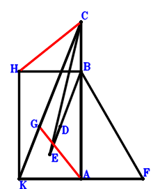
\(\because \) D is the centroid of △CKA \(\therefore \small\overrightarrow{AD}=\dfrac{\small\overrightarrow{AC}}{3} + \dfrac{\small\overrightarrow{AK}}{3}\).\(\because \) E, D, B are collinear and EB=3ED \(\therefore \small\overrightarrow{AE}=- \dfrac{\small\overrightarrow{AB}}{2} + \dfrac{3 \small\overrightarrow{AD}}{2}=- \dfrac{\small\overrightarrow{AB}}{2} + \dfrac{\small\overrightarrow{AC}}{2} + \dfrac{\small\overrightarrow{AK}}{2}\).\(\because \) A is the midpoint of KF \(\therefore \small\overrightarrow{AF}=- \small\overrightarrow{AK}\).\(\because \) K, G, C are collinear and GC=2KG \(\therefore \small\overrightarrow{AG}=\dfrac{\small\overrightarrow{AC}}{3} + \dfrac{2 \small\overrightarrow{AK}}{3}\).\(\because \) HKAB is a parallelogram \(\therefore \small\overrightarrow{AH}=\small\overrightarrow{AB} + \small\overrightarrow{AK}\).\(\because \) \(CA=\dfrac{2 \sqrt{3}}{3}EC\) \(\therefore \dfrac{3 \small\overrightarrow{CA}^{2}}{4} - \small\overrightarrow{EC}^{2}=\dfrac{3 \small\overrightarrow{AC}^{2}}{4} - \left(\small\overrightarrow{AC} - \small\overrightarrow{AE}\right)^{2}=\dfrac{3 \small\overrightarrow{AC}^{2}}{4} - \left(\dfrac{\small\overrightarrow{AB}}{2} + \dfrac{\small\overrightarrow{AC}}{2} - \dfrac{\small\overrightarrow{AK}}{2}\right)^{2}=- \dfrac{\small\overrightarrow{AB}^{2}}{4} - \dfrac{\small\overrightarrow{AB} \cdot \small\overrightarrow{AC}}{2} + \dfrac{\small\overrightarrow{AB} \cdot \small\overrightarrow{AK}}{2} + \dfrac{\small\overrightarrow{AC}^{2}}{2} + \dfrac{\small\overrightarrow{AC} \cdot \small\overrightarrow{AK}}{2} - \dfrac{\small\overrightarrow{AK}^{2}}{4}=0\) . . . . . . \(①\)\(\because \) \(BA=\dfrac{\sqrt{3}}{2}BF\) \(\therefore \small\overrightarrow{BA}^{2} - \dfrac{3 \small\overrightarrow{BF}^{2}}{4}=\small\overrightarrow{AB}^{2} - \dfrac{3 \left(- \small\overrightarrow{AB} + \small\overrightarrow{AF}\right)^{2}}{4}=\small\overrightarrow{AB}^{2} - \dfrac{3 \left(- \small\overrightarrow{AB} - \small\overrightarrow{AK}\right)^{2}}{4}=\dfrac{\small\overrightarrow{AB}^{2}}{4} - \dfrac{3 \small\overrightarrow{AB} \cdot \small\overrightarrow{AK}}{2} - \dfrac{3 \small\overrightarrow{AK}^{2}}{4}=0\) . . . . . . \(②\)In conclusion, \(\small\overrightarrow{GA} \cdot \small\overrightarrow{HC}=- \small\overrightarrow{AG} \cdot \left(\small\overrightarrow{AC} - \small\overrightarrow{AH}\right)=- \left(\dfrac{\small\overrightarrow{AC}}{3} + \dfrac{2 \small\overrightarrow{AK}}{3}\right) \cdot \left(- \small\overrightarrow{AB} + \small\overrightarrow{AC} - \small\overrightarrow{AK}\right)=\dfrac{\small\overrightarrow{AB} \cdot \small\overrightarrow{AC}}{3} + \dfrac{2 \small\overrightarrow{AB} \cdot \small\overrightarrow{AK}}{3} - \dfrac{\small\overrightarrow{AC}^{2}}{3} - \dfrac{\small\overrightarrow{AC} \cdot \small\overrightarrow{AK}}{3} + \dfrac{2 \small\overrightarrow{AK}^{2}}{3}=-2/3\cdot①-2/3\cdot②=0\), that is, GA⊥HC.
Exercise 4547： Let GAKC be a parallelogram. D is the centroid of △CAK. B, D, E are collinear and BE=3DE. C, H, K are collinear and CH=2HK. A is the midpoint of FK. \(CA=\dfrac{2 \sqrt{3}}{3}CE\) and \(BA=\dfrac{\sqrt{3}}{2}FB\). Prove that GB⊥AH.
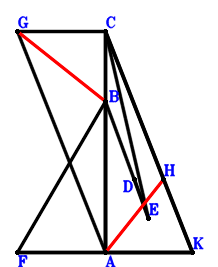
\(\because \) D is the centroid of △CAK \(\therefore \small\overrightarrow{AD}=\dfrac{\small\overrightarrow{AC}}{3} + \dfrac{\small\overrightarrow{AK}}{3}\).\(\because \) B, D, E are collinear and BE=3DE \(\therefore \small\overrightarrow{AE}=- \dfrac{\small\overrightarrow{AB}}{2} + \dfrac{3 \small\overrightarrow{AD}}{2}=- \dfrac{\small\overrightarrow{AB}}{2} + \dfrac{\small\overrightarrow{AC}}{2} + \dfrac{\small\overrightarrow{AK}}{2}\).\(\because \) A is the midpoint of FK \(\therefore \small\overrightarrow{AF}=- \small\overrightarrow{AK}\).\(\because \) GAKC is a parallelogram \(\therefore \small\overrightarrow{AG}=\small\overrightarrow{AC} - \small\overrightarrow{AK}\).\(\because \) C, H, K are collinear and CH=2HK \(\therefore \small\overrightarrow{AH}=\dfrac{\small\overrightarrow{AC}}{3} + \dfrac{2 \small\overrightarrow{AK}}{3}\).\(\because \) \(CA=\dfrac{2 \sqrt{3}}{3}CE\) \(\therefore \dfrac{3 \small\overrightarrow{CA}^{2}}{4} - \small\overrightarrow{EC}^{2}=\dfrac{3 \small\overrightarrow{AC}^{2}}{4} - \left(\small\overrightarrow{AC} - \small\overrightarrow{AE}\right)^{2}=\dfrac{3 \small\overrightarrow{AC}^{2}}{4} - \left(\dfrac{\small\overrightarrow{AB}}{2} + \dfrac{\small\overrightarrow{AC}}{2} - \dfrac{\small\overrightarrow{AK}}{2}\right)^{2}=- \dfrac{\small\overrightarrow{AB}^{2}}{4} - \dfrac{\small\overrightarrow{AB} \cdot \small\overrightarrow{AC}}{2} + \dfrac{\small\overrightarrow{AB} \cdot \small\overrightarrow{AK}}{2} + \dfrac{\small\overrightarrow{AC}^{2}}{2} + \dfrac{\small\overrightarrow{AC} \cdot \small\overrightarrow{AK}}{2} - \dfrac{\small\overrightarrow{AK}^{2}}{4}=0\) . . . . . . \(①\)\(\because \) \(BA=\dfrac{\sqrt{3}}{2}FB\) \(\therefore \small\overrightarrow{BA}^{2} - \dfrac{3 \small\overrightarrow{BF}^{2}}{4}=\small\overrightarrow{AB}^{2} - \dfrac{3 \left(- \small\overrightarrow{AB} + \small\overrightarrow{AF}\right)^{2}}{4}=\small\overrightarrow{AB}^{2} - \dfrac{3 \left(- \small\overrightarrow{AB} - \small\overrightarrow{AK}\right)^{2}}{4}=\dfrac{\small\overrightarrow{AB}^{2}}{4} - \dfrac{3 \small\overrightarrow{AB} \cdot \small\overrightarrow{AK}}{2} - \dfrac{3 \small\overrightarrow{AK}^{2}}{4}=0\) . . . . . . \(②\)In conclusion, \(\small\overrightarrow{BG} \cdot \small\overrightarrow{HA}=- \small\overrightarrow{AH} \cdot \left(- \small\overrightarrow{AB} + \small\overrightarrow{AG}\right)=- \left(\dfrac{\small\overrightarrow{AC}}{3} + \dfrac{2 \small\overrightarrow{AK}}{3}\right) \cdot \left(- \small\overrightarrow{AB} + \small\overrightarrow{AC} - \small\overrightarrow{AK}\right)=\dfrac{\small\overrightarrow{AB} \cdot \small\overrightarrow{AC}}{3} + \dfrac{2 \small\overrightarrow{AB} \cdot \small\overrightarrow{AK}}{3} - \dfrac{\small\overrightarrow{AC}^{2}}{3} - \dfrac{\small\overrightarrow{AC} \cdot \small\overrightarrow{AK}}{3} + \dfrac{2 \small\overrightarrow{AK}^{2}}{3}=-2/3\cdot①-2/3\cdot②=0\), that is, GB⊥AH.
Exercise 4568： Let KHBA be a parallelogram. C, G, K are collinear and CG=2GK. E, D, A are the midpoints of CB, KA, BF, respectively. \(BA=\dfrac{\sqrt{3}}{2}KF\) and \(CA=\dfrac{2 \sqrt{3}}{3}ED\). Prove that GA⊥CH.
\(\because \) D is the midpoint of KA \(\therefore \small\overrightarrow{AD}=\dfrac{\small\overrightarrow{AK}}{2}\).\(\because \) E is the midpoint of CB \(\therefore \small\overrightarrow{AE}=\dfrac{\small\overrightarrow{AB}}{2} + \dfrac{\small\overrightarrow{AC}}{2}\).\(\because \) A is the midpoint of BF \(\therefore \small\overrightarrow{AF}=- \small\overrightarrow{AB}\).\(\because \) C, G, K are collinear and CG=2GK \(\therefore \small\overrightarrow{AG}=\dfrac{\small\overrightarrow{AC}}{3} + \dfrac{2 \small\overrightarrow{AK}}{3}\).\(\because \) KHBA is a parallelogram \(\therefore \small\overrightarrow{AH}=\small\overrightarrow{AB} + \small\overrightarrow{AK}\).\(\because \) \(CA=\dfrac{2 \sqrt{3}}{3}ED\) \(\therefore \dfrac{3 \small\overrightarrow{CA}^{2}}{4} - \small\overrightarrow{DE}^{2}=\dfrac{3 \small\overrightarrow{AC}^{2}}{4} - \left(- \small\overrightarrow{AD} + \small\overrightarrow{AE}\right)^{2}=\dfrac{3 \small\overrightarrow{AC}^{2}}{4} - \left(\dfrac{\small\overrightarrow{AB}}{2} + \dfrac{\small\overrightarrow{AC}}{2} - \dfrac{\small\overrightarrow{AK}}{2}\right)^{2}=- \dfrac{\small\overrightarrow{AB}^{2}}{4} - \dfrac{\small\overrightarrow{AB} \cdot \small\overrightarrow{AC}}{2} + \dfrac{\small\overrightarrow{AB} \cdot \small\overrightarrow{AK}}{2} + \dfrac{\small\overrightarrow{AC}^{2}}{2} + \dfrac{\small\overrightarrow{AC} \cdot \small\overrightarrow{AK}}{2} - \dfrac{\small\overrightarrow{AK}^{2}}{4}=0\) . . . . . . \(①\)\(\because \) \(BA=\dfrac{\sqrt{3}}{2}KF\) \(\therefore \small\overrightarrow{BA}^{2} - \dfrac{3 \small\overrightarrow{KF}^{2}}{4}=\small\overrightarrow{AB}^{2} - \dfrac{3 \left(\small\overrightarrow{AF} - \small\overrightarrow{AK}\right)^{2}}{4}=\small\overrightarrow{AB}^{2} - \dfrac{3 \left(- \small\overrightarrow{AB} - \small\overrightarrow{AK}\right)^{2}}{4}=\dfrac{\small\overrightarrow{AB}^{2}}{4} - \dfrac{3 \small\overrightarrow{AB} \cdot \small\overrightarrow{AK}}{2} - \dfrac{3 \small\overrightarrow{AK}^{2}}{4}=0\) . . . . . . \(②\)In conclusion, \(\small\overrightarrow{GA} \cdot \small\overrightarrow{HC}=- \small\overrightarrow{AG} \cdot \left(\small\overrightarrow{AC} - \small\overrightarrow{AH}\right)=- \left(\dfrac{\small\overrightarrow{AC}}{3} + \dfrac{2 \small\overrightarrow{AK}}{3}\right) \cdot \left(- \small\overrightarrow{AB} + \small\overrightarrow{AC} - \small\overrightarrow{AK}\right)=\dfrac{\small\overrightarrow{AB} \cdot \small\overrightarrow{AC}}{3} + \dfrac{2 \small\overrightarrow{AB} \cdot \small\overrightarrow{AK}}{3} - \dfrac{\small\overrightarrow{AC}^{2}}{3} - \dfrac{\small\overrightarrow{AC} \cdot \small\overrightarrow{AK}}{3} + \dfrac{2 \small\overrightarrow{AK}^{2}}{3}=-2/3\cdot①-2/3\cdot②=0\), that is, GA⊥CH.
Exercise 4586： Let BHKA be a parallelogram. K, G, C are collinear and GC=2KG. F, A, E are the midpoints of CB, KD, KA, respectively. \(BA=\dfrac{\sqrt{3}}{2}BD\) and \(CA=\dfrac{2 \sqrt{3}}{3}EF\). Prove that GA⊥HC.
\(\because \) A is the midpoint of KD \(\therefore \small\overrightarrow{AD}=- \small\overrightarrow{AK}\).\(\because \) E is the midpoint of KA \(\therefore \small\overrightarrow{AE}=\dfrac{\small\overrightarrow{AK}}{2}\).\(\because \) F is the midpoint of CB \(\therefore \small\overrightarrow{AF}=\dfrac{\small\overrightarrow{AB}}{2} + \dfrac{\small\overrightarrow{AC}}{2}\).\(\because \) K, G, C are collinear and GC=2KG \(\therefore \small\overrightarrow{AG}=\dfrac{\small\overrightarrow{AC}}{3} + \dfrac{2 \small\overrightarrow{AK}}{3}\).\(\because \) BHKA is a parallelogram \(\therefore \small\overrightarrow{AH}=\small\overrightarrow{AB} + \small\overrightarrow{AK}\).\(\because \) \(BA=\dfrac{\sqrt{3}}{2}BD\) \(\therefore \small\overrightarrow{BA}^{2} - \dfrac{3 \small\overrightarrow{BD}^{2}}{4}=\small\overrightarrow{AB}^{2} - \dfrac{3 \left(- \small\overrightarrow{AB} + \small\overrightarrow{AD}\right)^{2}}{4}=\small\overrightarrow{AB}^{2} - \dfrac{3 \left(- \small\overrightarrow{AB} - \small\overrightarrow{AK}\right)^{2}}{4}=\dfrac{\small\overrightarrow{AB}^{2}}{4} - \dfrac{3 \small\overrightarrow{AB} \cdot \small\overrightarrow{AK}}{2} - \dfrac{3 \small\overrightarrow{AK}^{2}}{4}=0\) . . . . . . \(①\)\(\because \) \(CA=\dfrac{2 \sqrt{3}}{3}EF\) \(\therefore \dfrac{3 \small\overrightarrow{CA}^{2}}{4} - \small\overrightarrow{EF}^{2}=\dfrac{3 \small\overrightarrow{AC}^{2}}{4} - \left(- \small\overrightarrow{AE} + \small\overrightarrow{AF}\right)^{2}=\dfrac{3 \small\overrightarrow{AC}^{2}}{4} - \left(\dfrac{\small\overrightarrow{AB}}{2} + \dfrac{\small\overrightarrow{AC}}{2} - \dfrac{\small\overrightarrow{AK}}{2}\right)^{2}=- \dfrac{\small\overrightarrow{AB}^{2}}{4} - \dfrac{\small\overrightarrow{AB} \cdot \small\overrightarrow{AC}}{2} + \dfrac{\small\overrightarrow{AB} \cdot \small\overrightarrow{AK}}{2} + \dfrac{\small\overrightarrow{AC}^{2}}{2} + \dfrac{\small\overrightarrow{AC} \cdot \small\overrightarrow{AK}}{2} - \dfrac{\small\overrightarrow{AK}^{2}}{4}=0\) . . . . . . \(②\)In conclusion, \(\small\overrightarrow{GA} \cdot \small\overrightarrow{HC}=- \small\overrightarrow{AG} \cdot \left(\small\overrightarrow{AC} - \small\overrightarrow{AH}\right)=- \left(\dfrac{\small\overrightarrow{AC}}{3} + \dfrac{2 \small\overrightarrow{AK}}{3}\right) \cdot \left(- \small\overrightarrow{AB} + \small\overrightarrow{AC} - \small\overrightarrow{AK}\right)=\dfrac{\small\overrightarrow{AB} \cdot \small\overrightarrow{AC}}{3} + \dfrac{2 \small\overrightarrow{AB} \cdot \small\overrightarrow{AK}}{3} - \dfrac{\small\overrightarrow{AC}^{2}}{3} - \dfrac{\small\overrightarrow{AC} \cdot \small\overrightarrow{AK}}{3} + \dfrac{2 \small\overrightarrow{AK}^{2}}{3}=-2/3\cdot①-2/3\cdot②=0\), that is, GA⊥HC.